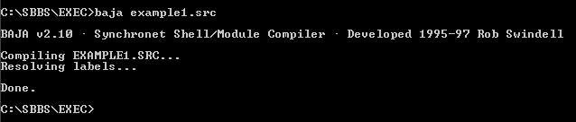

Synchronet Baja® Documentation
Table of Contents
1. Introduction to BAJA
1.1 Introduction
1.2 Source Files
1.3 BAJA.EXE
1.4 Modules
2. BAJA Programming Basics
2.1 Programming Syntax
2.2 Variables
2.3 Arguments
2.4 C Strings
2.5 Integer Constants
2.6 Command Key Constants
2.7 Include Files
2.8 Macro Definitions
2.9 Global Variable Declarations
3. Programming Style and Rules
3.1 Programming Style
3.2 Suggested Rules
4. BAJA Function Reference
4.1 Function Definitions
4.2 String Manipulation
4.3 Integer Manipulation
4.4 Logic/Control Flow
4.5 Display
4.6 Input
4.7 Miscellaneous
4.8 Mail
4.9 Message Base
4.10 File Base
4.11 Chat
4.12 Information
4.13 File I/O
4.14 File System
4.15 Directory System
5. System Variables
5.1 System Variables
6. Function Reference
6.1 Quick Function Reference
Baja (pronounced bä'hä) is a high-level development tool used to create
"command shells" and "loadable modules" for Synchronet BBS software. The
programmable command and menu structure (PCMS) technology in Synchronet version
2 allows sysops to modify the user interface for the BBS by replacing or
modifying command shells. Synchronet version 2.0 shipped with six stock command
shells (Classic and Novice Synchronet shells as well as emulations of PCBoard,
Wildcat, Major, and Renegade BBS packages). These shells can be modified,
removed, or replaced with ease. Up to 500 shells can be made available to the
users of the BBS with configurable security access to each shell via ARS (see
the Synchronet Sysop manual for details on ARS).
Synchronet loadable modules are used to extend or customize the abilities of
the BBS. Some modules are automatically loaded during specific events (login,
logon, logoff, etc) while others may be executed at the request of a user
(much like a door or other internal menu option).
Note:
If you come across an undefined term in this document, please read through
the document to possibly find the term defined later or used again to clarify
its meaning by context, or see the glossary in the Synchronet sysop manual.
Back to Table of Contents
Command shells and modules begin their life as a text source file (normally
with a .SRC extension) or group of text files (including .INC files). These
source files (and .INC files) can be edited with any ASCII text editor (e.g.
EDIT, QEDIT, EDLIN, etc). The contents of the text file (often referred to as
"source code") must conform to the Baja language specifications defined in this
document. An extremely basic example of a command shell source file:
# EXAMPLE1.SRC
# Label for later "goto" commands
:TOP
# Clear the screen
CLS
# Show menu of commands
MNEMONICS "~Comment to Sysop\r\n"
MNEMONICS "~Goodbye (Logoff)\r\n"
# Show command prompt
PRINT "\r\nCommand: "
# Get command key
GETCMD "CG"
# Comment to sysop?
COMPARE_KEY C
IF_TRUE
SETSTR "1"
MAIL_SEND_FEEDBACK
GOTO TOP
END_IF
# Logoff?
COMPARE_KEY G
IF_TRUE
LOGOFF
GOTO TOP
END_IF
|
The syntax of the above text will be explained later in this document.
For more examples of Baja source code, please see the *.SRC files in your
Synchronet EXEC directory.
Back to Table of Contents
After the source file has been created, BAJA.EXE is used to compile the .SRC
file into a binary file with a .BIN extension that Synchronet can interpret
and execute. If the source filename is EXAMPLE1.SRC, then the command line
would be:
BAJA EXAMPLE1
The compiler's output:

This creates the binary file EXAMPLE1.BIN.
Warning: Do not attempt to edit, view, or print .BIN files.
If the compile fails, an error message will be displayed with the filename that
contains the error and the specific line number followed by a colon and the
offending code.
Baja source (.SRC), include (.INC), and binary (.BIN) files as well as the Baja
program itself are normally stored in the Synchronet EXEC directory. This is
where Synchronet loads command shells and modules from, so the .BIN files must
be created in or copied to this directory before they can be used.
After a command shell has been compiled, it must be added to the list of
available command shells in SCFG (Synchronet Configuration program) to be
available for the users to use. If using a multinode BBS, the other nodes
must be re-run before the new command shell will be available on those nodes.
If modifying an existing command shell, SCFG does not need to be run and nodes
do not have to be re-run since command shell binary files are dynamically
loaded for each logon.
Back to Table of Contents
Baja modules are very similar to command shells with the main difference being
that they are not automatically loaded upon logon as command shells are
(with the exception of login and logon modules). Instead, modules must be
loaded from a command shell with the EXEC_BIN function described later in
this document or launched as an external program or event configured in SCFG.
Binary module files, like command shell binaries, must be located in the
Synchronet EXEC directory.
Modules can be used to consolidate identical portions of multiple command
shells into one binary that can be loaded from each command shell so that if a
modification needs to be made to that portion, then only one source file needs
to be modified and recompiled as opposed to making the same change to every
command shell and recompiling them all. An example of this use is the STR_CMDS
(string commands) module that is launched from multiple command shells.
Another use for modules is for third-party add-ons. Rather than distributing
Baja source that must be merged into command shell source by sysops, developers
can distribute module binaries that can be loaded directly from a command
shell with a very small modification to the existing shells.
To load a Baja module in place of a DOS executable in SCFG, prepend an asterisk
(*) to the name of the module (e.g. "*MYMOD") for the command line. If an
argument is included on the command line (e.g. "*MYMOD %A") the contents
will be automatically placed into the current command string for possible use
by the module or functions there in.
To load a Baja module while displaying a message, menu file, or TEXT.DAT line
(excluding lines containing % variables) use "@EXEC:MYMOD@", were MYMOD is the
name of the module to execute. This is useful for executing modules in places
where they cannot normally be loaded by event or command line. @-codes are
only expanded in posts and e-mail if posted locally by user #1 (the sysop).
Back to Table of Contents
Basics:
Execution always begins at the top of the source code and continues
downward until a function is executed which changes the flow of
execution. Only one function is allowed per line. The total length of
each line cannot exceed 1000 characters.
Whitespace:
All whitespace (TAB and SPACE characters) at the beginning of each line
are ignored. The first printable character of a line is considered
the first character. Completely blank lines are ignored.
Comments:
If the first character of a line is the pound symbol (#), the
line is ignored. These are normally used for text comments (remarks)
about the following source code line(s). Comments may be included on
the same lines as some (not all) functions, but in general it is
considered best to keep comments on their own lines as to not interfere
with proper Baja syntax. Comments are more easily read if there is a
space after the pound symbol (#) and before the comment text begins.
Labels:
If the first printable character of a line is a colon (:), the line is
considered a label to be used for the GOTO or CALL functions. Labels
are not case sensitive. There should be no space between the colon and
the name of the label. Label names may not contain spaces. Duplicate
label names within the same module or shell are disallowed.
Case Sensitivity:
Most elements of Baja syntax are not case sensitive (where upper or
lower case is significant). Functions, and variable names (for example)
are not case sensitive. Character constants ('A' for example) are case
sensitive.
Back to Table of Contents
Variable names are not case sensitive and must begin with an alphabetic
character or an underscore (_). Variable names can be any length and
may contain alpha, numeric, and underscore characters only. The
variable name "str" is reserved to represent the current command string
and should not be used as a user defined variable name.
When referencing a variable name defined by the system or another
module (global), the "!GLOBAL" compiler directive must be used to
declare the variable or the compiler will not recognize the variable
name and exit with a syntax error. Global variable declarations should
appear near the top of your source file.
Baja modules that use variables require SBBS v2.2 or later.
When a function requires one or more arguments, there must some amount
of white space between the function name and each argument.
In function definitions (in this document), required arguments are
listed in angled brackets (< >) and optional arguments are listed in
square brackets ([ ]). The actual bracket symbols are NOT used in the
source code. They are strictly for documentary purposes.
When a string variable argument is specified in the definition of a
function, any string variable name (either local or global) may be
used. If str is used in the source code as the string variable name,
the current command string will be used in place of an actual
user or system string variable.
An argument of # (pound sign) indicates an integer constant. The actual
pound sign is not used in the argument. See the section on Integer
Constants for more details.
An argument of "str" (with double quotes) indicates a string constant
argument enclosed in double quotation marks. To place a double
quotation mark inside a string constant (as part of the actual string
constant), use \" instead of just " where you want the quotation mark
to appear in the string.
An argument of "cstr" (with double quotes) indicates a C string
constant argument enclosed in double quotation marks. See the next
section on C strings for the definition of the contents.
See the beginning of the Functions section for the complete definition
of all argument types and how they're specified in function
definitions.
Some character string arguments are defined as being C type (cstr).
This indicates the contents of the string use the same special/control
character escape sequences as defined for the printf() function in the
ANSI definition of the C programming language. The only exception to
the ANSI definition, is that \### defines a character value in decimal
(base 10), not octal (base 8). All escape sequences begin with the
backslash (\) character. The valid escape sequences are:
\\ Backslash
\? Question mark
\' Single quote
\" Double quote
\r Carriage return
\n Line feed
\t Horizontal tab
\b Backspace
\a Bell
\f Formfeed
\v Vertical tab
\### Character value in decimal
\x## Character value in hexadecimal
The text string must be enclosed in double quote (") symbols. Example:
"Hello, world.\r\n"
To include an actual back-slash (\) character in a C string, you must
prefix the back-slash with another back-slash. Example:
"C:\README.TXT"
would be an invalid path and filename.
"C:\\README.TXT"
would be the correct C string to represent C:\README.TXT.
Many functions allow or require the use of integer constants (as
opposed to integer variables). An integer constant is a number that is
"hard-coded" into the resulting executable file and will remain
constant (never change) from that point on.
You can specify integer constants in many ways:
Representation Range Examples
-------------- ----- --------
Decimal (base 10) -2147483648 to 2147483647 0, 10, -25
Hexadecimal (base 16) 0x0 to 0xffffffff 0x7f, 0xA69B
Octal (base 8) 00 to 037777777777 0377, 0505
Bit value .0 to .31 .0, .1, .15
ASCII value ' ' to '¦' 'A', ' ', '%'
Special char '\r' to '\v' (see C Strings) '\r', '\n'
Constants can be modified during specification (no variables may be
used in the modification). No space is allowed between the numeric
constant and the modifier symbol. Valid modifiers:
Symbol Operation Example
------ --------- -------
+ Addition 10+2
- Subtraction 20-8
* Multiplication 4*3
/ Division 36/3
% Modulus (remainder) 53%8
& Bit-wise AND 695&0x1f
| Bit-wise OR 0x10|8
~ Bit-wise NOT ~3
^ Bit-wise XOR (exclusive OR) 0xff^12
>> Right shift 03700>>4
<< Left shift 255<<2
Some functions require the use of a command key constant. A command key
constant is a keyword or symbol representing a valid command selected
by a user.
The simplest way to specify a command key constant, is to simply
type the key that you wish to use for a specific command. Example:
CMDKEY A
Would use the 'A' key for the command key constant. Simply specifying
a letter does not indicate case sensitive (i.e. the above example
could have been "CMDKEY a" with the same results).
To specify a specific case (upper or lower), you must prefix the
command key with a single quote symbol ('). Example:
CMDKEY 'a
To specify a control character (like Ctrl-H, which is a backspace),
you must prefix the control character (in upper case) with a caret
(^) symbol. Example:
CMDKEY ^H
Valid control character specifications:
^A Attribute/color code (internal line editor)
^B Beginning of line (internal line editor)
^C Abort
^D Delete word right (internal line editor)
^E End of line (internal line editor)
^F Forward cursor (Right arrow key)
^G Beep
^H Backspace
^I Tab
^J Line feed (Down arrow key)
^K Ctrl-key help menu
^L Form feed (Clear screen)
^M Carriage return (Enter key)
^N Next word (internal line editor)
^O Temp pause toggle
^P Private message
^Q Un-pause
^R Redraw line (internal line editor)
^S Pause
^T Time info
^U List users online
^V Center line (internal line editor)
^W Delete word left (internal line editor)
^X Delete line (internal line editor)
^Y Delete to end-of line (internal line editor)
^Z Raw input mode toggle
^] Back cursor (Left arrow key)
^[ Escape (Esc key)
^^ Up cursor (Up arrow key)
You may also specify special control characters (carriage return,
form feed, etc) be prepending a backslash (i.e. \r, \f, etc). See the
section on C strings for details.
Some command key input functions allow the use of slash-commands
(command keys prepended with a slash character, i.e. /A). The two
character slash-commands are the only multi-character commands
supported by command key functions. Example:
CMDKEYE /A
Is valid, but:
CMDKEYE -A
Is not valid.
To test specifically for digit (0-9) command keys and slash-digit
command keys (/0-/9), use DIGIT and EDIGIT respectively. Example:
CMDKEYE DIGIT
To test if the user hit a key from 0 to 9, or:
CMDKEYE EDIGIT
To test if the user hit a slash-key combination from /0 to /9.
You may, of course, also test for a specific digit command key:
CMDKEYE 1
and
CMDKEYE /1
are both valid command key constants.
To specify # for a command key, use '# (otherwise # will be interpreted
as the beginning of a comment).
To specify SPACE bar for the command key, use ' ', example:
CMDKEY ' '
Extended ASCII characters (Ç for example) are not valid command keys.
Back to Table of Contents
Source code segments that are to be shared among multiple command shells or
modules can be placed into a separate text file (preferably with a .INC
extension) and included in the source code for multiple modules by using the
"!INCLUDE" compiler directive to specify the filename to include. Example:
!INCLUDE MYDEFS.INC
This is useful when including files supplied by Digital Dynamics or third
party developers to pre-define constants (macros), common sub-routines, or
variable definitions. The following include files are distributed with Baja
(and should not be modified):
ERRNO.INC Definitions for possible values of _ERRNO system variable
FILE_IO.INC Constants for use with file I/O functions
DIR_ATTR.INC Constants for use with SET_FILE_ATTR & GET_FILE_ATTR functions
USERDEFS.INC Synchronet User constants for use with various functions
NODEDEFS.INC Synchronet Node constants for use with various functions
SBBSDEFS.INC Synchronet system variable declarations and constants
(automatically includes USERDEFS.INC and NODEDEFS.INC)
Take care not to include the same file more than once in the same source code.
It is suggested you put all of your !include statements near the top of your
source file. If you include a file that in-turn includes other files
(SBBSDEFS.INC, for example, includes USERDEFS.INC and NODEDEFS.INC), you
do not need to include the other files. If you !include SBBSDEFS.INC, you
DO NOT need to !incluce NODEDEFS.INC and USERDEFS.INC as well. Take care not
to nest include files too deeply or the compilation will fail.
This compiler directive is very similar to the "#include" directive used by
C compilers, but if a specific path is not specified, only the current
directory will be searched for the file to include.
Back to Table of Contents
Commonly used character strings and integer constants can be specified as
macros by using the "!DEFINE" compiler directive to specify the macro name to
use and the value of the macro. Example:
!DEFINE MAXIMUM_USERS 250
Now, any place you might want to use the number 250 in your Baja source, you
can use the macro "MAXIMUM_USERS" instead. This makes changing the value of
the numeric or character string constant very easy.
This compiler directive is very similar to the "#define" directive used by
C compilers with the main exception being that the macro name is not case
sensitive.
Back to Table of Contents
When using variables defined by the system (see System Variables) or another
shell or module (see GLOBAL_STR and GLOBAL_INT functions), you must first
declare these variables using the "!GLOBAL" compiler directive. Example:
!GLOBAL SOME_GLOBAL_VAR
Multiple global variables may be declared with one !GLOBAL statement:
!GLOBAL SOME_GLOBAL_VAR ANOTHER_GLOBAL_VAR
If you attempt to use a global variable without first declaring it, the
compiler will fail to compile the source with an "expected variable name"
syntax error message.
This compiler directive is very similar to the "extern" keyword used by C
compilers.
Back to Table of Contents
As stated in the previous section, white space characters at the beginning
of a line are ignored and have no effect on the resulting compilation. But,
whitespace can be very useful in making the source code readable by indenting
conditional blocks of code, and using blank lines to separate blocks of
related code. Comments are also very helpful in making the code readable.
Compare the following source to the example given in the Source Files chapter:
:TOP
CLS
MNEMONICS "~Comment to Sysop\r\n"
MNEMONICS "~Goodbye (Logoff)\r\n"
PRINT "\r\nCommand: "
GETCMD "CG"
COMPARE_KEY C
IF_TRUE
SETSTR "1"
MAIL_SEND_FEEDBACK
GOTO TOP
END_IF
COMPARE_KEY G
IF_TRUE
LOGOFF
GOTO TOP
END_IF
|
Without the whitespace and the comments, the code appears much more cryptic
(the control flow is hard to follow). But the code will compile into exactly
the same binary file as the earlier example.
Consider this more elaborate example using indentation only:
With indentation:
COMPARE_ARS FILE_CMDS=0
IF_TRUE
COMPARE_USER_MISC UM_ASK_NSCAN
IF_TRUE
YES_NO "\r\n\r\nSearch all libraries for new files"
IF_TRUE
FILE_NEW_SCAN_ALL
END_IF
END_IF
END_IF
|
Without indentation:
COMPARE_ARS FILE_CMDS=0
IF_TRUE
COMPARE_USER_MISC UM_ASK_NSCAN
IF_TRUE
YES_NO "\r\n\r\nSearch all libraries for new files"
IF_TRUE
FILE_NEW_SCAN_ALL
END_IF
END_IF
END_IF
|
As you can see without the indentation, you can get lost in nested IF
statements trying to understand how the code will execute.
While you may have known quite well what you intended to accomplish and how
you expected the code to execute at the time of writing it, it would be much
harder to understand how the code was expected to execute at a later date
(or by another person) if a consistent indentation style was not used.
Back to Table of Contents
There isn't a "right" or "wrong" way to use indentation, blank lines,
or comments, but we will present a set of suggested "rules" here. If you decide
you prefer another style, that is fine. The most important thing is that you
are consistent in your use of whatever style you choose.
Top of File Comments
Place a comment as the very first line of the file with the name of the .SRC
file. Example:
# EXAMPLE.SRC
Then a block of comment lines that describe what the shell or module's purpose
is, who programmed it, when, where, etc.
Label Comments
Labels normally represent the beginning of a sub-routine and should be
well commented. A graphical line to show the beginning of a new sub-routine
is often helpful. Example:
############################### My Sub-routine ################################
:MY-SUB
|
CMD_HOME Comments
The CMD_HOME function marks the beginning of a command/menu loop and should
be well commented. Example:
#############
# MAIN MENU #
#############
CMD_HOME
|
Conditional Indentation
Whenever a block of code is conditionally executed (only executed under
specific conditions), the block of code should be indented one tabstop past
the block header (IF_TRUE, IF_FALSE, ELSE, SWITCH, CASE, CMDKEY, CMDSTR, etc).
The block of code to be indented includes the block terminator (END_IF,
END_CMD, END_CASE, END_SWITCH, etc). Example:
GETCMD "ABCD"
CMDKEY A
COMPARE_ARS LEVEL 50
IF_TRUE
PRINT "You have level 50 or higher.\r\n"
ELSE
PRINT "You have level 49 or lower.\r\n"
END_IF
END_CMD
|
Separate Code Blocks
Use blank lines to separate medium to large code blocks from other code
(most especially CMDKEY, CMDKEYS, CMDSTR, and SWITCH code blocks). Example:
GETCMD "ABCD"
CMDKEY A
PRINT "You hit A.\r\n"
END_CMD
CMDKEY B
PRINT "You hit B.\r\n"
END_CMD
|
End of File Comment
Place a comment at the end of the file. Example:
# End of EXAMPLE.SRC
Back to Table of Contents
The remainder of this document is for defining the correct use of all Baja
functions. If you wish to look up a specific function by subject, please refer
to the table of contents or the quick reference at the end of the document.
Argument Types
Each function definition will begin with the name of the function followed by
all possible arguments (parameters) and the type of each argument. The possible
argument types are:
Type Description
"str" String constant (contained in double quotes)
"cstr" C string constant (contained in double quotes)
txt String constant (no quotes)
# Integer constant (the # symbol is not part of the syntax)
str_var String variable name or 'str' for current command string
int_var Integer variable name
any_var Any string or integer variable name
char Character constant (single character, no quotes)
key Command key constant
keylist List of command key constants (no space between each key)
Each argument type is contained in either angled brackets (< and >) to indicate
the argument is required, or square brackets ([ and ]) to indicate the
argument is optional. An argument of [...] indicates a variable number of
optional arguments of the last specified type. Example:
SPRINTF <str_var> <"cstr"> <any_var> [any_var] [...]
This function definition indicates that the SPRINT function requires a minimum
of three arguments: a string variable, a C string constant, and one or more
variables of either integer or string type.
Required Include Files
Following the function argument types, may be one or more required include
(.INC) files. If any files are listed on the same line as the function
(to the right of the page), these files must be included at the top of
your source file to use this function arguments correctly. Example:
!INCLUDE NODEDEFS.INC
Do not include the same file more than once in the same source file. Once
is enough, and it should be done so near the top of your source (.SRC) file.
Argument Names
If any arguments are allowed for a function, a list of argument names will
follow the text "args:" below the function name and argument list. This will
help in referencing the individual arguments in the function description.
Back to Table of Contents
Functions used for manipulating string variables (global or local) and/or the
current command string.
STR <str_var> [str_var] [...]
args: new_vars
------------------------------
Define one or more local string variables for later use. The new_vars arguments
are the names of the variables to define. These names must not be currently
used by other variables (local or global).
The variable name "str" is used by other functions to refer to the current
command string, and therefore cannot be used as a user defined variable name.
After definition, the variable names can be used by other functions. The
variables will each be initialized to a null string. The variables can only be
referenced in the current shell or module. When the current shell or module is
terminated, the variable names and their contents are lost. If you wish to
retain a variable name and its contents between shells or modules, use a global
variable instead of a local variable.
GLOBAL_STR <str_var> [str_var] [...]
args: new_vars
------------------------------------
Define one or more global string variables for later use. The arguments are the
names of the variables to define. Each variable name must not be currently used
by another variable (local or global). Global variable names and their contents
are not disposed of until the current user logs off the BBS.
SET <str_var> <"cstr">
args: dest value
-----------------------
Writes to the string variable dest, the contents of the C string specified as
value. This function is the Baja equivalent of the standard C strcpy() function
with the exception that the source must be a string constant. Example:
STR USER_NAME
SET USER_NAME "John Doe"
When writing to the current command string, use the SETSTR function instead
of this function for best optimization.
COPY <str_var> <any_var>
args: dest source
------------------------
Copies the source variable (string or integer) into the specified destination
variable. This function is the Baja equivalent of the standard C strcpy()
function with the exception that the source must be a variable, but may be
either of integer or string type. Example:
# define two variables
STR VAR1 VAR2
# copy some text into the first variable
SET VAR1 "Some Text"
# copy that variable into the second variable
COPY VAR2 VAR1
# display the contents of second variable
PRINT VAR2
If the source variable is an integer variable, it is converted into
a decimal (base 10) string before the copy is executed. Use SPRINTF if you
want to convert an integer variable into a string using hexadecimal (base 16)
or octal (base 8) representation instead of decimal.
SWAP <str_var> <any_var>
args: var1 var2
------------------------
Exchanges the contents of two string variables, or a string variable and an
integer variable. The first argument (var1) is the name of a string variable
and the second argument (var2) is the name of a string or integer variable.
If var2 is an integer variable, var1 will be set to the decimal representation
of the integer variable contents and var2 will be set the integer
representation of var1 (specified in hex, octal, or decimal). Example:
INT I
STR S
# set S to 100h (256)
SET S "0x100"
# set I to 100
SET I 100
# swap them
SWAP S I
# I now equals 256 and S is "100"
STRCAT <str_var> <str_var or "cstr">
args: dest source
------------------------------------
Concatenates (appends) the contents of a string variable (specified as dest)
with the contents of a C string or string variable specified as source. This
function is the Baja equivalent of the standard C strcat() function.
SPRINTF <str_var> <"cstr"> <any_var> [any_var] [...]
args: dest format variables
----------------------------------------------------
Writes the specified variables into the string variable (dest) based on
the specified format. This function is the same as PRINTF except that the
output is written into the dest string variable instead of the console. This
function is the Baja equivalent of the standard C sprintf() function with
the exception that all the arguments following the format must be variables
(no constants allowed). See the PRINTF function definition for details.
TIME_STR <str_var> <int_var>
args: dest time
----------------------------
Writes to the string variable (specified as dest) the time and date stored in
the integer variable specified by time. This function is the Baja equivalent
to the standard C ctime() function. Example:
# Display current time
INT T
TIME T
TIME_STR STR T
PRINTF "Current time: %s\r\n" STR
Would display the current date/time similar to:
Current time: Thu Aug 31 1995 08:34 am
DATE_STR <str_var> <int_var>
args: dest time
----------------------------
Writes to the string variable (specified as dest) the date stored in the
integer variable specified by time (obtained with TIME or similar function) in
MM/DD/YY format or DD/MM/YY format if European date format is enabled in SCFG.
Example:
# Display current date
INT T
TIME T
DATE_STR STR T
PRINTF "Current date: %s\r\n" STR
Would display the current date similar to:
Current date: 08/31/95
SECOND_STR <str_var> <int_var>
args: dest seconds
------------------------------
Writes to the string variable (specified as dest) the number of seconds
(in HH:MM:SS format) stored in the integer variable specified by seconds.
Example:
# Display number of seconds elapsed
INT START END
TIME START
PRINT "Wait a period of time, then hit a key..."
GETKEY
TIME END
SUB END START
SECOND_STR STR END
PRINTF "\r\n%s time elapsed.\r\n" STR
FTIME_STR <str_var> <"cstr"> <int_var>
args: dest format time
--------------------------------------
Writes to the string variable (specified as dest) the date and time information
from the integer variable (specified as time) formatted according to string
constant specified as format. The format characters are described below:
%a abbreviated weekday name
%A full weekday name
%b abbreviated month name
%B full month name
%c date and time
%d day of month (01-31) (zero-padded)
%H hour (24-hour clock) (00-23)
%I hour (12-hour clock) (01-12)
%j day of the year (001-366)
%m month (01-12)
%M minute (00-59)
%p AM or PM
%S second (00-59)
%U week number of the year (Sunday as 1st day of week) (00-52)
%w weekday (0-6, Sunday is 0)
%W week number of the year (Monday as 1st day of week) (00-52)
%x date
%X time
%y year without century (00-99)
%Y year with century
%Z time zone name, if any
%% % (percent symbol)
This function is the Baja equivalent of the standard C strftime() function.
Example:
# Display current date and time
INT T
TIME T
FTIME_STR STR "Current_Time:%A,%B-%d-%Y,%I:%M %p" T
PRINTF "%s\r\n" STR
SHIFT_STR [str_var] <#>
args: string len
------------------------
This function ("Shift String") shifts the specified string variable if
specified (current command string if not specified) to the left 'len' number of
characters.
# Displays the string "ELLO"
SETSTR "HELLO"
SHIFT_STR 1
PRINT STR
This function is most often used to parse command string arguments or "stacked"
commands.
STRIP_CTRL [str_var]
args: string
--------------------
Removes all control characters (and Ctrl-A codes) from specified string
variable. If string is not specified, then the current command string is
processed.
TRUNCSP [str_var]
args: string
-----------------
Removes (truncates) all white space characters from end of specified string
variable or current command string (if string not specified).
STRUPR [str_var]
args: string
----------------
Converts specified string argument to all uppercase characters. This function
is the Baja equivalent to the standard C strupr() function.
STRLWR [str_var]
args: string
----------------
Converts specified string argument to all lowercase characters. This function
is the Baja equivalent to the standard C strlwr() function.
SETSTR <"cstr">
args: text
---------------
Writes to current command string, specified constant text string. This
function should be used in place of "SET STR" for best optimization.
REPLACE_TEXT <#> <"cstr">
args: num text
-------------------------
This function is used to replace a default internal text string (read from the
CTRL\TEXT.DAT file) in a shell or module. The first argument (num) is the text
number to replace (see TEXT.DAT for the number of the text you wish to
replace). The second argument (text) is the C type string to use in place the
current one. All text replacements are lost (back to default TEXT.DAT) when the
user logs off. Example, to replace the "[Hit a key]" prompt with a different
string:
REPLACE_TEXT 563 "\1n\1h\1b{\1wPAUSE\1b} "
When replacing a TEXT.DAT string that contains %s, %d, or other % specifiers,
you will need to change them to %%s, %%d, etc (without changing the order).
If you wish to globally replace a string (for all shells and modules), you may
want to just edit the CTRL\TEXT.DAT file directly instead.
LOAD_TEXT <"str">
args: filename
-------------------
Loads an alternate TEXT.DAT file (from CTRL directory, automatically assuming
a .DAT extension for "filename"). Only those text items that are different
from the current TEXT items will be changed. All changes will only be in
effect until the current user logs off or the effects are reversed with the
REVERT_TEXT function. The base filename should be something other than just
"TEXT" (since that is the default TEXT.DAT that is loaded by SBBS).
This function is useful for making multiple languages available to your users.
REVERT_TEXT <# or ALL>
args: num
----------------------
This function is used to reverse the effects of a previous call to REPLACE_TEXT
or LOAD_TEXT (reverts back to default TEXT.DAT). Example:
REPLACE_TEXT 563 "\1n-=[Hit a Key]=- "
PAUSE
REVERT_TEXT 563
If the argument is the word ALL, then all text strings are reverted to the
original TEXT.DAT entries.
Back to Table of Contents
Functions used for manipulating integer variables (global or local).
INT <int_var> [int_var] [...]
args: new_vars
------------------------------
Define one or more local integer variables for later use. The new_vars
arguments are the names of the variables to define. These names must not be
currently used by other variables (local or global).
After definition, the variable names can be used by other functions. The
variables will each be initialized to a 0. The variables can only be referenced
in the current shell or module. When the current shell or module is terminated,
the variable names and their contents are lost. If you wish to retain a
variable name and its contents between shells or modules, use a global variable
instead of a local variable.
GLOBAL_INT <int_var> [int_var] [...]
args: new_vars
------------------------------------
Define one or more global integer variables for later use. The arguments are
the names of the variables to define. Each variable name must not be currently
used by another variable (local or global). Global variable names and their
contents are not disposed of until the current user logs off the BBS.
SET <int_var> <#>
args: dest value
---------------------
Writes to the integer variable dest, the integer constant specified as value.
INT I
SET I 100
ADD <int_var> <any_var or #>
args: dest value
-----------------------------
Adds the value specified in the second argument to the integer variable
specified as dest.
SUB <int_var> <any_var or #>
args: dest value
-----------------------------
Subtracts the value specified in the second argument from the integer variable
specified as dest.
MUL <int_var> <any_var or #>
args: dest value
-----------------------------
Multiplies the first argument by the value specified in the second argument
and places the result into dest.
DIV <int_var> <any_var or #>
args: dest value
-----------------------------
Divides the first argument by the value specified in the second argument
and places the result into dest.
MOD <int_var> <any_var or #>
args: dest value
-----------------------------
Divides the first argument by the value specified in the second argument
and places the remainder into dest.
AND <int_var> <any_var or #>
args: dest value
-----------------------------
Bit-wise ANDs the value specified in the second argument with the integer
variable specified as dest.
OR <int_var> <any_var or #>
args: dest value
----------------------------
Bit-wise ORs the value specified in the second argument with the integer
variable specified as dest.
NOT <int_var> <any_var or #>
args: dest value
-----------------------------
Bit-wise ANDs the unary opposite of the value specified in the second argument
with the integer variable specified as dest.
XOR <int_var> <any_var or #>
args: dest value
-----------------------------
Bit-wise exclusive ORs the value specified in the second argument with the
integer variable specified as dest.
COPY <int_var> <any_var>
args: dest source
------------------------
Copies the source variable (string or integer) into the specified destination
variable. Example:
# define two variables
INT INT1 INT2
# place a value into the first variable
SET VAR1 5
# copy that variable into the second variable
COPY VAR2 VAR1
# display the contents of second variable
PRINTF "VAR2=%ld\r\n" VAR2
If the source variable is an string variable, it is converted into an integer
before the copy is executed.
SWAP <int_var> <any_var>
args: var1 var2
------------------------
Exchanges the contents of two integer variables, or a string variable and an
integer variable. The first argument (var1) is the name of an integer variable
and the second argument (var2) is the name of a string or integer variable.
RANDOM <int_var> <#>
args: dest num
---------------------
Places a random number between 0 and num-1 into dest.
TIME <int_var>
args: dest
--------------
Places the current time (in unix/time_t format) into dest. This function is
the Baja equivalent of the standard C time() function.
STRLEN <int_var> <str_var>
args: dest string
--------------------------
Places the length (in characters) of the specified string into dest. This
function is the Baja equivalent of the standard C strlen() function.
DATE_INT <int_var> <str_var>
args: dest date
----------------------------
Converts a date string (in MM/DD/YY format) into an integer and places it
into dest.
CRC16 <int_var> <str_var>
args: dest string
-------------------------
Calculates the 16-bit CRC of the specified string and places the result into
dest.
CRC32 <int_var> <str_var>
args: dest string
-------------------------
Calculates the 32-bit CRC of the specified string and places the result into
dest.
CHKSUM <int_var> <str_var>
args: dest string
--------------------------
Calculates the CHKSUM of the specified string and places the result into
dest.
CHARVAL <int_var> <str_var>
args: dest string
---------------------------
Places the ASCII value of the first character in the specified string into
dest.
Back to Table of Contents
GOTO <txt>
args: label
-----------
This function is used to force the control flow to immediately jump to another
part of the code. A valid label name must follow GOTO as an argument. This
function is very similar to the GOTO command used in the BASIC and C
programming languages or the JMP instruction used in the Assembly programming
language.
CALL <txt>
args: label
-----------
This function is used to execute a sub-routine. The sub-routine must be
defined with the specified label somewhere in the current module. When a
RETURN function is executed in the sub-routine, control flow will return to the
next line following the CALL function that started the sub-routine. The CALL
function is very similar to the GOSUB command used in the BASIC programming
language or the CALL instruction used in the Assembly programming language. At
least one RETURN function must exist in the sub-routine. Sub-routines should
not use a GOTO function to "jump out" of the sub-routine.
RETURN
------
This function is used to exit a sub-routine and return to the point in the
code from which it was called with the CALL function. If a RETURN
function is executed without a prior CALL, then the shell or module is
immediately terminated. If a shell is terminated with a user online, they
are immediately logged off. If a module is terminated, execution control
returns to the shell or module that loaded it.
SETLOGIC <TRUE or FALSE or GREATER or LESS>
args: logic
-------------------------------------------
This function is used to set the current logic state to TRUE (same as
EQUAL), FALSE (same as NOT_EQUAL), GREATER, or LESS. The logic state is set by
many functions, and tested by the IF_... functions to control the flow of
execution.
COMPARE <any_var> <any_var or "cstr" or #>
args: var cmp
------------------------------------------
This function compares any two variables, or a variable and a constant.
If the cmp argument is an integer variable or integer constant and the
var variable is a string variable, then cmp is converted to a string
representation of the cmp variable before the comparison is made. If the cmp
argument is a string variable or string constant and the var variable is
an integer variable, then cmp is converted to an integer before the comparison
is made. The current logic state is set to the result of the comparison:
TRUE (same as EQUAL), FALSE (as an NOT_EQUAL), GREATER, or LESS.
IF_TRUE
-------
If the current logic state is set to TRUE, then following block of code
(ending in an END_IF or ELSE function) will be executed. Otherwise,
the interpreter will skip the code until an ELSE or END_IF function is found
and resume execution from that point. This function is the same as IF_EQUAL.
IF_FALSE
--------
This function is identical to the IF_TRUE function except that it works in the
opposite manor in regards to the current logic state. This function is the
same as IF_NOT_EQUAL.
IF_GREATER
----------
If the current logic state is set to GREATER by a subsequent COMPARE function,
the following IF_... block will be executed.
IF_GREATER_OR_EQUAL
-------------------
If the current logic state is set to GREATER or EQUAL, the following IF_...
block will be executed. This function is the same as IF_EQUAL_OR_GREATER.
IF_LESS
-------
If the current logic state is set to LESS by a subsequent COMPARE function,
the following block will be executed.
IF_LESS_OR_EQUAL
----------------
If the current logic state is set to LESS or EQUAL, the following code block
will be executed. This function is the same as IF_EQUAL_OR_LESS.
ELSE
----
This function marks the end of an IF_... block of code and begins an alternate
block of code to be executed if the condition is not met for the IF_...
function. The block of code is terminated with an END_IF function.
END_IF
------
This function is used to terminate an IF_... or ELSE code block. Every IF_...
function must be followed by an ELSE or END_IF instruction, and every ELSE
function must be followed by an END_IF.
SWITCH <int_var>
----------------
CASE <#>
--------
END_CASE
--------
DEFAULT
-------
END_SWITCH
----------
The SWITCH function is used in conjunction with the CASE, DEFAULT, END_CASE,
and END_SWITCH functions to replace multiple COMPARE/IF_.../ELSE statements.
Example:
INT I
RANDOM I 3
COMPARE I 0
IF_EQUAL
PRINT "Zero"
ELSE
COMPARE I 1
IF_EQUAL
PRINT "One"
ELSE
COMPARE I 2
IF_EQUAL
PRINT "Two"
END_IF
END_IF
END_IF
Could be replaced with:
INT I
RANDOM I 3
SWITCH I
CASE 0
PRINT "Zero"
END_CASE
CASE 1
PRINT "One"
END_CASE
CASE 2
PRINT "Two"
END_CASE
DEFAULT
PRINTF "Random returned %ld" I
END_CASE
END_SWITCH
If the SWITCH argument value is equal to one of the specified CASE arguments,
then that CASE code block is executed until an END_CASE function is reached.
If an END_CASE function does not exist in the code block, the execution will
continue through (fall-through) the following CASE or DEFAULT functions until
an END_CASE or END_SWITCH function is reached.
If the SWITCH argument does not match any of the CASE arguments, the DEFAULT
code block will be executed until an END_CASE or END_SWITCH function is
reached. If a DEFAULT function is not specified, execution will skip to the
END_SWITCH function. Only one DEFAULT code block should be specified per
SWITCH/END_SWITCH block, if used at all. This function set is the Baja
equivalent of the standard C switch(), case:, default:, and break keywords.
CMD_HOME
--------
This function (called "Command Home") is very similar to a label. It is
a convenience function for programming menu commands. It sets a return
point (or anchor, if you will) for the automatic looping on a specific menu.
Execution control is returned to the point in the code where the last CMD_HOME
was specified by the END_CMD function.
CMDKEY <key>
args: cmd
------------
This function (called "Command Key") is like a combination of the
COMPARE_KEY and IF_TRUE functions. It is usually immediately preceded by
a GETCMD, GETKEY, GETSTR or similar function.
If the current command key matches the command key constant (cmd), then the
block of code following (terminated with an END_CMD function) will be executed.
When the END_CMD function is executed, execution control returns to the most
recently executed CMD_HOME function. If a RETURN or GOTO function will be
executed before the END_CMD function, then a CMD_POP function must be executed
to tell the interpreter to "forget" the previous CMD_HOME function. Even if
execution control will cause the END_CMD function to never be executed, it
still must be present to define the code block so that it can be skipped if the
CMDKEY comparison is false.
CMDKEYS <keylist>
args: cmds
-----------------
This function is identical to the CMDKEY function with the exception that the
argument is a list of valid keys and if the current command key matches any
of those listed, the following code block is executed.
CMDSTR <"cstr">
args: cmd
---------------
This function (called "Command Str") is identical to the CMDKEY function
with the exception that the argument is a C type string. It is usually
immediately preceded by a GETSTR or similar function.
END_CMD
-------
This function is used to mark the end of a CMDKEY, CMDKEYS, or CMDSTR code
block.
CMD_POP
-------
This function tells the interpreter to "forget" the most recently executed
CMD_HOME function. It should only be used when a CMDKEY, CMDKEYS, or CMDSTR
code block contains a GOTO or RETURN function.
COMPARE_KEY <key>
args: cmd
-----------------
This function is identical to the CMDKEY function in regards to the
key argument. The current command key is set by the GETCMD, GETKEY, GETSTR
or similar functions. If the current command key matches the key argument,
the current logic state is set to TRUE, otherwise it is set to FALSE.
As with all COMPARE functions, it is usually immediately followed by an
IF_TRUE or IF_FALSE function.
COMPARE_KEYS <keylist>
args: cmds
----------------------
This function is identical to the CMDKEYS functions in regards to the
keylist argument. If the current command key is contained in the keylist,
then the current logic state is set to TRUE, otherwise it is set to FALSE.
COMPARE_STR <"cstr">
args: string
--------------------
This function compares the current command string (set by the SETSTR,
GETSTR, or similar functions) against the C type string argument and sets
the current logic state to TRUE or FALSE accordingly. The comparison is not
case sensitive. This function is the Baja equivalent to the standard C
stricmp() function.
COMPARE_WORD <"cstr">
args: string
---------------------
This function is identical to the COMPARE_STR function with the
exception that the current command string must only match the string argument
for as many characters as included in the string argument.
If for example, the current command string is "OPEN BLACKJACK" then the line:
COMPARE_WORD "OPEN"
would set the current logic state to TRUE since the first 4 characters of
each string match, but the line:
COMPARE_STR "OPEN"
would set the current logic state to FALSE since the strings do not entirely
match.
COMPARE_ARS <txt>
args: ars
-----------------
This function compares the requirement string argument ars against the
information on the current user and sets the current logic state to either
TRUE or FALSE based on the result of the comparison. See the ARS chapter of
the Synchronet sysop manual for details on the syntax of ARS.
Example:
COMPARE_ARS LEVEL 60
IF_TRUE
PRINT "You have level 60 or higher.\r\n"
END_IF
COMPARE_STRN <#> <str_var> <str_var or "cstr">
args: num str1 str2
-----------------------------------------------
This function is used to compare the first num characters of strings str1
and str2. This function is the Baja equivalent of the standard C strnicmp()
function. If the two strings are the same (ignoring case) for the first
num characters, the current logic state is set to TRUE, otherwise it is set
to FALSE.
COMPARE_SUBSTR <str_var> <str_var or "cstr">
args: str1 str2
--------------------------------------------
This function is used to check if str2 is contained in str1 (case sensitive).
This function is the Baja equivalent of the standard C strstr() function.
If str2 is located in str1, the current logic state is set to TRUE, otherwise
it is set to FALSE. This following example would set the current logic state
to TRUE:
SETSTR "This is a test"
COMPARE_SUBSTR STR "test"
Back to Table of Contents
Display functions are used to display output to the user either locally,
remotely, or both.
PRINT <"cstr" or var>
args: string
---------------------
This function sends a string of characters to the user (both locally and
remotely, if applicable). The string to be printed can extend beyond the 80th
column of the screen, but when printing multiple lines, multiple consecutive
PRINT statements are preferred.
Example:
PRINT "hello, world\r\n"
or:
STR my_var
SET my_var "hello, world\r\n"
PRINT my_var
The string can contain color codes using Synchronet Ctrl-A codes. See the
Synchronet sysop manual for the definition of Ctrl-A codes and their usage.
If you are using an ASCII editor that does not support control characters,
a "\1" can be used in place of the Ctrl-A (smiley face) character.
Variables can also be included in the string (example: user's name, sysop's
name, BBS name, etc) by using Synchronet supported @-codes and command line
% specifiers. See the Synchronet sysop manual for the definition of @-codes
and command line % specifiers. The %s command line specifier, when used, is
replaced with the current command string and %f is replaced with the complete
path of the current file directory. Be careful not to confuse command line %
specifiers (%a, %b, etc) with printf % specifiers (described later). They can
actually be used together in the same string (supported by PRINTF functions) by
using double % for the command line % specifiers (e.g. %%s instead of %s).
PRINTF <"cstr"> [any_var] [...]
args: format variables
-------------------------------
This function is similar to print, except that defined variables can be placed
(formatted) into to displayed text output. This function is the Baja
equivalent of the standard C printf() function. The format argument is a C type
string with C printf() % specifiers for variable formatting.
The valid specifiers are:
%% Percent symbol
%s String variable
%#s String variable, minimum # chars wide, right justified
%-#s String variable, minimum # chars wide, left justified
%.#s String variable, maximum # chars wide
%#.#s String variable, min and max width specified, right justified
%-#.#s String variable, min and max width specified, left justified
%ld Integer variable, decimal - use lx for hexadecimal (lX=caps)
%#ld Integer variable minimum # chars wide right justified
%-#ld Integer variable minimum # chars wide left justified
%0#ld Integer variable minimum # digits wide zero padded
Multiple variable names may be specified after the str argument, but each
variable MUST be properly represented in the str argument with the correct
PRINTF specifier (either %ld, %lx, or %s).
Example:
STR s
SET s "hello, world"
PRINTF "~%s~\r\n" s
PRINTF "~%10s~\r\n" s
PRINTF "~%.10s~\r\n" s
PRINTF "~%-10s~\r\n" s
PRINTF "~%.15s~\r\n" s
PRINTF "~%-15s~\r\n" s
PRINTF "~%15.10s~\r\n" s
PRINTF "~%-15.10s~\r\n" s
Would produce the following display:
~hello, world~
~hello, world~
~hello, wor~
~hello, world~
~hello, world ~
~ hello, wor~
~hello, wor ~
And:
INT i
SET i 1234
PRINTF "~%ld~\r\n" i
PRINTF "~%3ld~\r\n" i
PRINTF "~%6ld~\r\n" i
PRINTF "~%-6ld~\r\n i
PRINTF "~%06ld~\r\n" i
PRINTF "~%06lx~\r\n" i
PRINTF "~%06lX~\r\n" i
Would produce the following display:
~1234~
~1234~
~ 1234~
~1234 ~
~001234~
~0004d2~
~0004D2~
PRINT_LOCAL <"cstr">
args: string
--------------------
This function works identical to the PRINT function with the exception that
the output is only displayed locally (on the BBS console). Ctrl-A codes
and @-codes are not supported.
PRINT_REMOTE <"cstr">
args: string
---------------------
This function works identical to the PRINT function with the exception that
the output is only displayed remotely (on the user's terminal). If the current
user is not logged on remotely, then no output is performed. Ctrl-A codes
and @-codes are not supported.
PRINTSTR
--------
This function works identical to the PRINT function with the exception that
this function does not accept a string argument, and instead uses the current
command string (set with SETSTR, GETSTR, or similar function) as the character
string to print.
Example:
SETSTR "hello, world\r\n"
PRINTSTR
PRINTKEY
--------
This function displays the current command key. The command key is normally
obtained with the GETKEY, GETCMD, or similar function.
MNEMONICS <"cstr">
args: string
------------------
This function works identical to the PRINT function with the exception that
the output is automatically colorized and characters following a tilde (~)
are considered a mnemonic command character (hot key) and are high-lighted
or placed in parentheses if the user's terminal does not support ANSI. If
Ctrl-A codes are included in the str argument, then the automatic colorization
and high-lighting is not used.
Example:
mnemonics "Select: ~Good, ~Bad, or ~Indifferent: "
CLS
---
This function clears the current text screen.
CRLF
----
This function displays a carriage return/line feed (new line). It is equivalent
to PRINT "\r\n", but requires less memory and executes faster.
PRINTFILE <"str" or str_var> [#] SBBSDEFS.INC
args: file mode
----------------------------------
Displays the contents of the file to the user (both locally and remotely, if
applicable).
Valid mode parameters:
P_NOABORT Disallows abortion of display with Ctrl-C
P_SAVEATR Retain attributes (colors) after display
P_NOATCODES Don't expand @-code variables/actions
P_OPENCLOSE Open and close immediately (before display)
Multiple mode parameters can be specified by joining them together with the
OR (|) symbol.
Example:
!INCLUDE SBBSDEFS.INC
PRINTFILE "C:\TEXT\HELP.TXT" P_NOABORT|P_OPENCLOSE
PRINTTAIL <str_var> <#> <#> SBBSDEFS.INC
args: file mode x
-----------------------------
Displays the last x number of lines of file. The valid mode parameters are the
same as those shown for the PRINTFILE function. If you don't want any of the
mode values, use 0 for the mode.
PRINTFILE_STR
-------------
This function is identical to the PRINTFILE function, with the exception that
there is no argument, the current command string is used for the path and
filename instead.
PRINTFILE_LOCAL <"str">
args: file
-----------------------
This function works identical to the PRINTFILE function, with the exception
that the contents are only displayed locally.
PRINTFILE_REMOTE <"str">
args: file
----------------------
This function works identical to the PRINTFILE function, with the exception
that the contents are only displayed remotely. If the user is not logged on
remotely, then no output is performed.
LIST_TEXT_FILE
--------------
This function works similar to the PRINTFILE function, with the exception
that the system password is required when run remotely and the user is prompted
to enter the path and name of the file to list.
EDIT_TEXT_FILE
--------------
This function is generally for sysop use only. It will automatically prompt
the user (if remote) for the system password, and then prompt them for the
path and name of the file to edit.
PAUSE
-----
This function produces a "[Hit a key]" prompt and waits for the user to hit a
key.
MENU <"str">
args: file
----------
This function is similar to the PRINTFILE function with the exception that the
TEXT\MENU directory is assumed to be the root path for the file and the file's
extension (.ASC, .ANS, .MON, or .RIP) should not be specified. This function
will automatically display the correct file based on the what the user's
terminal supports and which menu files are available. To display a menu file
in a different directory, a sub-directory can be specified before the filename.
For example, do display the MAIN.* menu file in the TEXT\MENU\SIMPLE directory,
you would use the following:
MENU "SIMPLE\MAIN"
To display the MAIN.* menu file in the TEXT\MENU directory, you would use the
following:
MENU "MAIN"
You can also change the default menu directory with the SET_MENU_DIR function.
Using the SET_MENU_FILE function, you can override the location and filename
for MENUs that are displayed from within core functions of Synchronet.
NODELIST_ALL
------------
This function displays the current status of all nodes.
NODELIST_USERS
--------------
This function displays the current status of all nodes that are in use.
USERLIST_SUB
------------
This function displays all users that have access to the current message
sub-board.
USERLIST_DIR
------------
This function displays all users that have access to the current file
directory.
USERLIST_ALL
------------
This function displays all users that have active accounts on the BBS.
USERLIST_LOGONS
---------------
This function displays a list of the users who have logged on today.
YES_NO <"cstr">
args: question
----------------
This function displays the question argument with automatic colorization
followed by the text " (Y/n) ? " and waits for the user to hit 'Y', 'N' or CR.
If CR (enter) is hit, then 'Y' is assumed. If the answer to the prompt is 'Y',
then the current logic state is set to TRUE, otherwise it is set to FALSE.
Example:
YES_NO "Logoff Now"
IF_TRUE
LOGOFF
END_IF
NO_YES <"cstr">
args: question
----------------
This function is identical to the YES_NO function with the exception that the
string is followed by text " (y/N) ? " and if CR is hit, then 'N' is assumed.
If the answer to the prompt is 'N', then the current logic state is set to
TRUE, otherwise it is set to FALSE.
Example:
NO_YES "Logoff Now"
IF_FALSE
LOGOFF
END_IF
READ_SIF <"str">
args: file
--------------
This function displays the contents of a SIF questionnaire data file (path and
filename specified in the current command string). The data is read
from the SIF data file and displayed through the SIF questionnaire file:
"TEXT\file.SIF".
The original SIF data file is created with the CREATE_SIF function. The
SIF file used to create and display the data file do not have to be the same
SIF file, but should have the same order and format of data types.
See the Synchronet Sysop Manual for details on the SIF file format.
SAVELINE
--------
This function saves the current line of text on the console to an internal
Synchronet buffer for later re-display with the RESTORELINE function.
RESTORELINE
-----------
This function re-displays a previously saved line of text to the local and
remote console (if applicable).
Back to Table of Contents
Input functions are used to obtain input data from the user (most often from
the user's keyboard).
INKEY
-----
Checks to see if the user has hit a key. If the user has hit a key, the
current command key is set to the hit key and the current logic state is
set to TRUE, otherwise the logic state is set to FALSE. This function does
not wait for a user to hit a key.
GETKEY
------
Waits for a single key from the user. The key is converted to upper case (if
a letter) and becomes the current command key for functions such as CMDKEY,
COMPARE_KEY, etc. The key is not echoed (displayed). Use the PRINTKEY function
to display a key accepted with this function.
GETKEYE
-------
This function is identical to the GETKEY function with the exception that
"slash commands" are allowed. That is, if the user hits the slash (/) key,
then the slash is echoed and the system waits for another key from the user.
The second key is converted to upper case (if a letter) and the slash/key
combination becomes the current command key for functions such as CMDKEY,
COMPARE_KEY, etc. The second key is not echoed (displayed). Use the PRINTKEY
function to display a key accepted with this function.
GETCMD <"cstr">
args: keys
---------------
This function is very similar to the GETKEY function, except that the 'keys'
argument specifies the only valid key to be accepted. The keys arguments is
a C style string, so carriage return (ENTER) is specified with a \r. If, for
example, you wanted to allow the user to hit A, B, C or ENTER, then you would
use the following:
GETCMD "ABC\r"
When an allowed key is hit, the key is converted to upper case (if a letter)
and echoed (displayed) followed by a CRLF automatically. The key then becomes
the current command key for functions such as CMDKEY, COMPARE_KEY, etc.
Ctrl-C will always be allowed, in which case the command key becomes ^C.
GETSTR [str_var] [#] [#] SBBSDEFS.INC
args: string max mode
---------------------------
This function ("Get String"), is used to accept a string of characters from
the user. The 'max' argument specifies the maximum length allowed for the
string (in characters). 'max' should not exceed 79 characters for most uses.
This function allows the user to enter any valid ASCII characters to form
command words, sentences, etc. Control will not return to the module until the
user either hits CR (ENTER), Ctrl-C, or Ctrl-V or is disconnected. The
resultant string can then be used in functions such as CMDSTR, COMPARE_STR,
COMPARE, SHIFT_STR, XTRN_EXEC, FILE_DOWNLOAD, etc.
If string is not specified, the current command string is written to. If
max is not specified, the value 128 is used.
The valid mode parameters (defined in SBBSDEFS.INC) are:
Mode Description
~~~~ ~~~~~~~~~~~
K_UPPER Converts all letters to upper case
K_UPRLWR Upper/Lower case automatically
K_NUMBER Allow numbers only
K_WRAP Allows word wrap
K_MSG Allows Ctrl-A codes and Ctrl-G (beep)
K_SPIN Spinning cursor
K_LINE Input line (inverse color)
K_EDIT Edit string passed
K_NOCRLF Don't print CRLF after string input
K_ALPHA Only allow alphabetic characters
K_LOWPRIO low priority input
K_NOEXASC No extended ASCII allowed
K_E71DETECT Detect E-7-1 terminal type
K_AUTODEL Auto-delete text (used with EDIT)
K_NOECHO Don't echo input to local or remote console
Multiple mode parameters can be used by ORing them together with the | symbol.
Example:
GETSTR STR 25 K_UPRLWR|K_EDIT|K_AUTODEL
GETLINE [str_var] [#]
args: string max
--------------------------
This function is identical to GETSTR with the exception that an inverse line
is displayed to the user (if the user has an ANSI terminal) to show the maximum
length of the input string.
GETSTRUPR [str_var] [#]
args: string max
------------------------
This function ("Get String Upper") is identical to GETSTR with the exception
that the string is automatically converted to uppercase as the user types.
GETNAME [str_var] [#]
args: string max
----------------------
This function is identical to GETSTR with the exception that the string is
automatically converted to "Capitalized" words (as in a proper noun) as the
user types.
GETFILESPEC
-----------
This function is specifically used to accept a file specification (name and/or
wildcard characters) from the user. It will automatically display a prompt
similar to:
Filespec [*.*]:
before waiting for the user to input the file specification. If the user hits
CR, *.* is assumed to be the file specification. If a period is not included
in the string, a ".*" is automatically appended (so CR, "*" and "*.*" all
result in the same string: "*.*"). If the user enters "A*", the string becomes
"A*.*". If the user enters "A*." the string remains unchanged. If the user
hits Ctrl-C, the current logic state is set to FALSE. Otherwise, the logic
state is set to TRUE.
Example:
GETFILESPEC
IF_TRUE
FILE_DOWNLOAD
END_IF
GETLINES
--------
This function only has an effect if the user is logged on remotely, has
ANSI terminal capability and their screen lines set to "Auto-detect". It
sends an ANSI sequence to detect the number of screen lines in the text window
of the remote terminal and waits for a response.
GETNUM [any_var] <#>
args: dest max
---------------------
This function is similar to GETSTR with the exception that it only excepts
numbers as input and automatically stops accepting input if the number being
input would exceed max (maximum of 32767). The dest variable (current
command string if not specified) will contain the number and the current logic
state will be TRUE unless the user hit 'Q', Ctrl-C, or enter instead of a
number.
GET_TEMPLATE <"str">
------------------
This function is much line GETLINE except that an input template is passed
as an argument to this function. The template is useful when requiring the
user to input a string of a fixed format, like a date, for example. The
characters in the template have special meaning: N indicates only a number may
be used in this position, A indicates only an alphabetic character, and !
indicates any character may be used in that position. Characters other than
N, A, or ! are automatically displayed and used in the current command string
in those positions. The first character of the template must be either N, A, or
!. An example (date format):
GET_TEMPLATE "NN/NN/NN"
would require the user to input two numbers, then automatically skip the
slash character, two more numbers, skip the slash, then two more numbers.
Another example (Canadian postal code):
GET_TEMPLATE "ANA NAN"
would require the user to input a letter, then a number, another letter,
automatically skip the space, another number, another letter, and one more
number. No other characters (symbols or otherwise) would be allowed in the
string using the above template example.
CHKSYSPASS
----------
This function ("Check System Password") displays an SY: prompt to the user
and waits for the user to input the system password (with no echo). If the
password is correct, the current logic state is set to TRUE, otherwise it
is set to FALSE.
CREATE_SIF <"str">
args: file
----------------
This function is used to present the user with a SIF questionnaire and store
their answers in a data file. The str argument is the filename of a .SIF file
(without the .SIF extension) located in your Synchronet TEXT directory. The
user's answers are stored in a data file whose path and filename are specified
in the current command string. The data file should be specified with the
user's number to ensure unique data filenames. Example:
SETSTR "C:\\SBBS\\USER%4.DAT"
CREATE_SIF "NEWUSER"
This would read the file TEXT\NEWUSER.SIF and the user would fill-out the
questionnaire with all answers being stored in the file C:\SBBS\USER####.DAT
(where #### would be the user's number padded with zeros to four digits).
The questionnaire could then be read back with the answers filled in.
Example:
SETSTR "C:\\SBBS\\USER%4.DAT"
READ_SIF "NEWUSER"
See the Synchronet Sysop Manual for details on the SIF questionnaire format.
Back to Table of Contents
ONLINE
------
Assume online execution (default mode), auto-return from module if user is
disconnected or logged off.
OFFLINE
-------
Assume offline execution, no carrier and no one online locally. If used
(for OFFLINE modules), must be the FIRST executed function of the module.
LOGIN <"cstr">
args: pwprompt
---------------
Process login attempt using the current command string as the user name/number
and pwprompt for the password prompt. This function may also prompt for the
system password with the SY: prompt if the user has level 90 or higher.
LOGON
-----
Logon the currently logged-in user. This function must be called before the
LOGIN module terminates if the user is to be allowed online. This function,
in turn, executes the LOGON module, if one is configured in SCFG.
LOGOFF
------
This function prompts the user if they really wish to log off. If they
answer Yes, then any logoff events are executed and the LOGOFF menu file
is displayed before they are disconnected.
LOGOFF_FAST
-----------
This function immediately drops carrier and logs the user off. It differs
from the HANGUP function in that it performs a SYNC function, then it
immediately drops carrier, as opposed to the HANGUP function which does not
perform a SYNC operation and has a buffer flush delay before actually
dropping carrier.
LOGOUT
------
Logout the currently logged-on user. This function is used solely for
re-logging-in an already connected user.
NEWUSER
-------
Begins the new user application process.
SET_MENU_DIR <"str">
args: dir
------------------
This function sets the default menu directory for the MENU function (normally
..\TEXT\MENU). This function is useful for globally changing the directory
where MENU files will be retrieved from (including internal Synchronet
functions that can not be modified with a shell). The following is an example
of how to use this function along with the MENU function:
# The next line would display ..\TEXT\MENU\MAIN.*
MENU "MAIN"
# Change the directory for menus
MENU_DIR "..\TEXT\MYMENUS"
# This next line would now display ..\TEXT\MYMENUS\MAIN.*
MENU "MAIN"
SET_MENU_FILE <"str">
args: path_and_filename
--------------------------------
This function is used to OVERRIDE the filename specified for a menu displayed
in an internal Synchronet function. Example:
SET_MENU_FILE "..\TEXT\MYMENUS\EMAIL.RIP"
MAIL_READ
SYNC
----
This function synchronizes the local and remote displays (waits for the remote
terminal to catch up), displays any internode messages waiting for this node,
and synchronizes the current node status with the shared node database file.
It should be called before all command prompts are displayed.
ASYNC
-----
This function is identical to the SYNC function with the exception that any
pending output (menu, text file, etc.) can be aborted by hitting any key.
RIOSYNC
-------
This function synchronizes the remote console (waits for output buffers to
be sent or aborted).
PUT_NODE
--------
Force flush (write) of current node information (who's online, etc) to disk.
PAUSE_RESET
-----------
This function resets the line counter used for the automatic screen pause
Feature.
CLEAR_ABORT
-----------
This function clears the abort (Ctrl-C) status flag.
UNGETKEY
--------
This function puts the current command key into the input buffer to be the
next key retrieved with GETKEY, GETCMD, GETSTR, or similar functions.
UNGETSTR
--------
This function puts the entire contents of the current command string into the
input buffer.
HANGUP
------
This function immediately disconnects and logs the user off.
EXEC <"str">
args: cmd
----------
This function calls the operating system to spawn the 'cmd' command line
specified. Remote users will not see or be able to interact with the program
executed unless the program is aware of the remote user and is specifically
designed to be run remotely (i.e. DOORs).
If an internal DOS command is to be executed, a command processor must be
loaded. Example:
EXEC "COMMAND /C COPY C:\FILES\NEWFILE.TXT C:\DOWNLOADS"
Synchronet's command line specifiers can also be used:
EXEC "%!dsz portx %u,%i sz file.zip"
See the Synchronet sysop manual, appendix A for a list of valid specifiers.
When used from a command shell or module, %f will be replaced with the path
to the current file directory, and %s will be replaced with the current
command string.
EXEC_INT <"str">
args: cmd
--------------
This function ("Execute with I/O intercepted") is identical to the EXEC
function with the exception that DOS I/O interrupts (screen output and keyboard
input) is intercepted and redirected to the COM port if the user is logged on
remotely. This allows programs that use standard DOS I/O for screen output
to be displayed remotely. Example:
EXEC_INT "COMMAND /C DIR C:\FILES\*.TXT"
EXEC_BIN <"str">
args: name
--------------
This function loads and executes a Baja module. A .BIN file with the filename
specified as the 'name' argument must exist in the Synchronet EXEC directory
for this function. If for example, you want a shell to load and execute
MYMOD.BIN from your EXEC directory, you would add the following to one or more
command shells:
EXEC_BIN "MYMOD"
EXEC_XTRN <"str">
args: code
---------------
This function executes the online external program specified by it's internal
code with the 'code' argument. If an online external program is not found with
a matching internal code or the user does not have access to that program, this
function does nothing.
LOG <"cstr">
args: string
------------
This function writes the C type 'str' argument to the system's activity log
file for the current date if the user is logged on remotely.
LOGSTR
------
This function is identical to the LOG function with the exception that a
string argument is not used, but instead the current command string is written
to the system's activity log file.
LOGKEY
------
This function writes the current command key to the system's activity log file
for the current date if the user is logged on remotely.
LOGKEY_COMMA
------------
This function is identical to the LOGKEY function, with the exception that a
comma (,) is prepended to the command key to separate it visually from other
logged command keys.
NODE_STATUS <#> NODEDEFS.INC
args: status
-------------------
This function is used to set the current node status. The valid status
parameters (defined in NODEDEFS.INC) are:
Status Description
~~~~~~ ~~~~~~~~~~~
NODE_WFC Waiting for caller
NODE_LOGON User logging on
NODE_NEWUSER New user applying for access
NODE_INUSE User online
NODE_QUIET User online in quiet mode
NODE_OFFLINE Offline (down)
NODE_NETTING Networking
NODE_EVENT_WAITING Waiting for another node to run timed event
NODE_EVENT_RUNNING Running timed event
NODE_EVENT_LIMBO Waiting for all nodes to be downed
Only one status parameter may be used.
NODE_ACTION <#> NODEDEFS.INC
args: action
-------------------
This function is used to set the current node action. The valid action
parameter (defined in NODEDEFS.INC) are:
Action Description
~~~~~~ ~~~~~~~~~~~
NODE_MAIN Main Prompt
NODE_RMSG Reading Messages
NODE_RMAL Reading Mail
NODE_SMAL Sending Mail
NODE_RTXT Reading G-Files
NODE_RSML Reading Sent Mail
NODE_PMSG Posting Message
NODE_AMSG Auto-message
NODE_XTRN Running External Program
NODE_DFLT Main Defaults Section
NODE_XFER File Transfer Prompt
NODE_DLNG Downloading File
NODE_ULNG Uploading File
NODE_BXFR Bidirectional Transfer
NODE_LFIL Listing Files
NODE_LOGN Logging on
NODE_LCHT In Local Chat with Sysop
NODE_MCHT In Multi-Chat with Other Nodes
NODE_GCHT In Local Chat with Guru
NODE_CHAT In Chat Section
NODE_SYSP Sysop Activity
NODE_TQWK Transferring QWK packet
NODE_PCHT In Private Chat
NODE_PAGE Paging another node for Private Chat
NODE_RFSD Retrieving file from seq dev (node.aux=dev)
Only one action parameter may be used.
INC_MAIN_CMDS
-------------
This function increments the "main menu command" counter that can be used in
ARS comparisons.
INC_FILE_CMDS
-------------
This function increments the "file menu command" counter that can be used in
ARS comparisons.
COMPARE_USER_MISC <#> USERDEFS.INC
args: attrs
------------------------
This function is used to compare the current user's miscellaneous attributes
to the attrs argument specified. If all the attrs specified are ENABLED for the
current user, then the current logic state is set to TRUE, otherwise it is set
to FALSE. One or more of the following attributes (defined in USERDEFS.INC)
can be specified:
Attribute Description
~~~~~~~~~ ~~~~~~~~~~~
UM_EXPERT Expert menu mode
UM_DELETED Deleted user
UM_INACTIVE Inactive user
UM_AUTOTERM Automatic terminal type detection
UM_ANSI ANSI terminal
UM_COLOR Color terminal (ANSI)
UM_RIP RIP compatible terminal
UM_WIP WIP compatible terminal
UM_NO_EXASCII Extended ASCII not supported
UM_UPAUSE Automatic screen pause
UM_SPIN Spinning cursor
UM_ANFSCAN Automatic new file scan
UM_CLRSCRN Clear screen between messages
UM_QUIET Default to quiet mode (if 'Q' exempt)
UM_BATCHFLAG Batch flagging mode enabled
UM_NETMAIL Forward E-mail to NetMail
UM_CURSUB Remember current sub-board and directory
UM_ASK_NSCAN Ask for new-scans at logon
UM_ASK_SSCAN Ask for your message scan at logon
UM_COLDKEYS Cold keys (CR required - opposite of Hot Keys)
UM_EXTDESC Extended file descriptions in listings
Multiple attributes can be specified by ORing them together with the OR (|)
symbol. Example:
COMPARE_USER_MISC UM_ANSI|UM_COLOR
COMPARE_USER_CHAT <#> USERDEFS.INC
args: attrs
------------------------
This function is used to compare the current user's chat attributes to the
attrs argument specified. If all the attrs specified are ENABLED for the
current user, then the current logic state is set to TRUE, otherwise it is set
to FALSE. One or more of the following attributes (defined in USERDEFS.INC) can
be specified:
Attribute Description
~~~~~~~~~ ~~~~~~~~~~~
CHAT_ECHO Echo users input in multinode chat
CHAT_ACTION Action commands enabled in multinode chat
CHAT_NOPAGE This user can't be paged by other users
CHAT_NOACT This user will not receive node activity (logon/off) alerts
CHAT_SPLITP This user prefers split-screen private node-to-node chat
Multiple attributes may be specified by ORing them together with the OR (|)
symbol. Example:
COMPARE_USER_CHAT CHAT_NOACT|CHAT_NOPAGE
COMPARE_USER_QWK <#> USERDEFS.INC
args: attrs
-----------------------
This function is used to compare the current user's QWK attributes to the attrs
argument specified. If all the attrs specified are ENABLED for the current
user, then the current logic state is set to TRUE, otherwise it is set to
FALSE. One or more of the following attrs (defined in USERDEFS.INC) can be
specified:
Attribute Description
~~~~~~~~~ ~~~~~~~~~~~
QWK_FILES Include new files list in QWK packet
QWK_EMAIL Include unread e-mail/netmail messages in QWK packet
QWK_ALLMAIL Include all mail in QWK packet
QWK_DELMAIL Automatically delete packed e-mail after download
QWK_BYSELF Include messages in QWK packet from self
QWK_EXPCTLA Expand Ctrl-A codes in messages to ANSI
QWK_RETCTLA Retain (keep) Ctrl-A codes in messages
QWK_ATTACH Include file attachments in QWK packet
QWK_NOINDEX Do not include .NDX files in QWK packet
QWK_TZ Include time zone (@TZ) in messages
QWK_VIA Include message path (@VIA) in messages
QWK_NOCTRL Do not include control files (DOOR.ID, CONTROL.DAT, etc)
Multiple attributes may be specified by ORing them together with the OR (|)
symbol. Example:
COMAPARE_USER_QWK QWK_TZ|QWK_VIA
COMPARE_NODE_MISC <#> NODEDEFS.INC
args: attrs
------------------------
This function is used to compare the current node's misc attributes to the
attrs argument specified. If all the attrs specified are ENABLED for the
current node, then the current logic state is set to TRUE, otherwise it is set
to FALSE. The valid attributes (defined in NODEDEFS.INC) are:
Attribute Description
~~~~~~~~~ ~~~~~~~~~~~
NODE_ANON Anonymous node
NODE_LOCK Locked node (sysop's and N exempt users only)
NODE_INTR Interrupted node (log user off ASAP)
NODE_MSGW Short message waiting for this node
NODE_POFF Not available for paging
NODE_AOFF No node activity alerts
NODE_UDAT User data has been updated by another node
NODE_RRUN Re-run this node after user logs off
NODE_EVENT Run node daily event after user logs off
NODE_DOWN Down this node after user logs off
NODE_NMSG Node message waiting for this node
NODE_EXT Extended status information available for this node
Multiple attributes may be specified by ORing them together with the OR (|)
symbol. Example:
COMPARE_NODE_MISC NODE_DOWN|NODE_INTR
TOGGLE_USER_MISC <#> USERDEFS.INC
args: attrs
-----------------------
This function is used to toggle specific attributes on or off for the current
user. The valid attrs for the argument are identical to those used for the
COMPARE_USER_MISC function.
You cannot specify if you want the attribute turned ON or OFF with this
command. Use in combination with the COMPARE_USER_MISC function to specifically
enable or disable a user's attribute. Example to turn the NETMAIL misc attr OFF
for the current user:
!INCLUDE USERDEFS.INC
COMPARE_USER_MISC UM_NETMAIL
IF_TRUE
TOGGLE_USER_MISC UM_NETMAIL
END_IF
TOGGLE_USER_CHAT <#> USERDEFS.INC
args: attrs
-----------------------
This function is used to toggle specific chat attributes on or off for the
current user. The valid attrs for the argument are identical to
those used for the COMPARE_USER_CHAT function.
You cannot specify if you want the attribute turned ON or OFF with this
command. Use in combination with the COMPARE_USER_CHAT function to specifically
enable or disable a chat attribute. Example to turn the Split Screen Private
Chat (CHAT_SPLITP) attribute OFF for the current user:
COMPARE_USER_CHAT CHAT_SPLITP
IF_TRUE
TOGGLE_USER_CHAT CHAT_SPLITP
END_IF
TOGGLE_USER_QWK <#> USERDEFS.INC
args: attrs
----------------------
This function is used to toggle specific QWK attributes on or off for the
current user. The valid attrs for the argument are identical to those used for
the COMPARE_USER_QWK function.
You cannot specify if you want the attr turned ON or OFF with this command. Use
in combination with the COMPARE_USER_QWK function to specifically enable or
disable a QWK attribute.
TOGGLE_NODE_MISC <#> NODEDEFS.INC
args: attrs
-----------------------
This function is used to toggle the miscellaneous attributes associated with
the current node. The valid attrs for the argument are identical to those used
for the COMPARE_NODE_MISC function.
TOGGLE_USER_FLAG <char> <char>
args: set flag
-----------------------------
This function is used to toggle the state of one of the current user's flags.
The first argument is a single character indicating the flag set. Valid
flag sets are 1, 2, 3, 4, or E for exemption, or R for restriction. The
second argument is the actual flag character to toggle (A through Z).
ADJUST_USER_CREDITS <#>
args: adj
------------------------
This function is used to add or subtract credits from the current user. The
'adj' argument must be either a positive or negative number (in Kilobytes).
Example, to subtract 100K in credits from the current user:
ADJUST_USER_CREDITS -100
ADJUST_USER_MINUTES <#>
args: adj
------------------------
This function is used to add or subtract minutes from the current user's
minute bank. The 'adj' argument must be either a positive or negative number.
Example, to subtract 60 minutes from the current user:
ADJUST_USER_MINUTES -60
SET_USER_LEVEL <#>
args: level
---------------------
This function changes the current user's security level to the number passed
as the argument.
SET_USER_STRING <#> USERDEFS.INC
args: user_string
----------------------------
This function changes one of the current user's text string fields to the
value of the current command string. The user_string argument must be one of
the following (defined in USERDEFS.INC):
User_string Description
~~~~~~~~~~~ ~~~~~~~~~~~
USER_STRING_ALIAS User's alias or real name on real name based BBSs
USER_STRING_REALNAME User's real name or company name
USER_STRING_HANDLE User's chat handle
USER_STRING_COMPUTER User's computer type description
USER_STRING_NOTE User's note/Caller-ID
USER_STRING_ADDRESS User's street address
USER_STRING_LOCATION User's city, state
USER_STRING_ZIPCODE User's zip/postal code
USER_STRING_PASSWORD User's password
USER_STRING_BIRTHDAY User's birthday (MM/DD/YY or DD/MM/YY)
USER_STRING_PHONE User's phone number
USER_STRING_MODEM User's modem type description
USER_STRING_COMMENT User's secret sysop comment
USER_EVENT <#> SBBSDEFS.INC
args: event_type
----------------------
This function forces immediate execution of all online events for the specified
event_type. The valid event_types (defined in SBBSDEFS.INC) are:
Event_type Description
~~~~~~~~~~ ~~~~~~~~~~~
EVENT_LOGON Execute during logon sequence
EVENT_NEWUSER Execute during newuser app.
EVENT_BIRTHDAY Execute on birthday
EVENT_LOGOFF Execute during normal logoff
AUTO_MESSAGE
------------
This function allows the user to read and write to the auto-message. If the
user has the 'W' restriction, they will not be allowed to write to the
auto-message.
USER_DEFAULTS
-------------
This function takes the user to the default configuration menu where they
can modify their default settings (e.g. Terminal type, Command Shell, etc).
If the user selects a new command shell while in this function, the new
shell is loaded and executed immediately (from the top) instead of resuming
with the shell that originally called this function.
USER_EDIT
---------
This function is used to edit the user information for the user name or number
specified in the current command string. Since almost all user information can
be changed and other users can be edited from this section, this is normally
reserved as a "sysop only" operation.
TEXT_FILE_SECTION
-----------------
This function takes the user to the General Text File section of the system.
XTRN_EXEC
---------
This function is identical to the EXEC_XTRN function with the exception that
the external program's internal code is contained in the current command string
instead of an argument.
XTRN_SECTION
------------
This function takes the user to the external program section of the system.
MINUTE_BANK
-----------
This function allows the user to convert credits into minutes, or deposit
unused free minutes (if allowed) in their minute bank.
CHANGE_USER
-----------
This function prompts the user for the system password and if entered
correctly, then prompts them for the user name or number to change into.
This is normally reserved as a "sysop only" operation. After changing into
a "non-sysop" user, the temp sysop status is set so the user may change back
into the original or another user.
ANSI_CAPTURE
------------
This function enables the capture of ANSI terminal escape sequences when the
local capture (Alt-L) is in use. This is normally reserved as a "sysop only"
operation.
FINDUSER
--------
Scans the user database for the user name or partial name in the current
command string. If the name is found, the logic state is set to TRUE. If the
name is not found, it is set to FALSE.
SELECT_SHELL
------------
This function displays a list of the available command shells and allows the
user to choose a command shell. If a shell is not selected, the logic state
is set to FALSE.
SET_SHELL
---------
This function attempts to set the current user's shell to the internal code
contained in the current command string. If the internal code is not valid or
the user does not have access to that shell, the logic state is set to FALSE.
SELECT_EDITOR
------------
This function displays a list of the available external editors and allows the
user to choose an editor. If an editor is not selected, the logic state
is set to FALSE.
SET_EDITOR
----------
This function attempts to set the current user's editor to the internal code
contained in the current command string. If the internal code is not valid or
the user does not have access to that external editor, the logic state is set
to FALSE.
TRASHCAN <"str">
args: file
--------------
This function opens the file TEXT\file.CAN and searches for the current
command string. If the string is found in the file the current logic state is
set to TRUE and if the file TEXT\BADfile.MSG exists, it is automatically
displayed to the user. If the string is not found, the logic state is set to
FALSE.
If a line in the .CAN file ends in a tilde (~), the contents of the line may
be found anywhere in the tested string and result in a TRUE logic state.
If a line in the .CAN file ends in a caret (^), the contents of the line must
begin the tested string to result in a TRUE logic state.
GETTIMELEFT
-----------
Checks the user's current time left online and disconnects the user (with a
message) if they're out of time.
MSWAIT <#>
args: num
-----------
Suspends execution for num milliseconds (gives up time-slices).
SEND_FILE_VIA <char> <"str" or str_var>
args: prot path_and_filename
---------------------------------------
Immediately begins a transfer of a file from the local disk (path_and_filename)
to the remote user using the specified protocol (prot must match the command
key of one of the configured protocols in SCFG).
RECEIVE_FILE_VIA <char> <"str" or str_var>
args: prot path_and_filename
---------------------------------------
Immediately begins a transfer of a file from the remote user using the
specified protocol (prot must match the command key of one of the configured
protocols in SCFG). The path_and_filename variable may be set to a directory
name for protocols that don't require a specified filename (i.e. Ymodem,
Zmodem, etc - NOT Xmodem). [SBBS 2.3]
Back to Table of Contents
The following functions are related to private E-mail.
MAIL_READ
---------
This function retrieves and displays mail waiting in the mail-box of the
current user, if any.
MAIL_READ_SENT
--------------
This function retrieves and displays mail that the current user has sent and
is still pending deletion in the mail-box(es) of the recipient(s).
MAIL_READ_ALL
-------------
This function retrieves and displays all the e-mail on the system. This
function is normally reserved as a "sysop only" operation.
MAIL_SEND
---------
This function attempts to send mail to the user specified by the current
command string. If the user name or number specified in the string cannot be
located, the operation is aborted and the current logic state is set to FALSE.
If the user name or number is located, the current logic state is set to TRUE.
Example usage:
PRINT "Send mail to who? "
GETNAME 25
MAIL_SEND
MAIL_SEND_FILE
--------------
This function is identical to the MAIL_SEND function with the exception that
a file attachment is included with the mail message.
MAIL_SEND_BULK
--------------
This function is used to send bulk (multiple destination) mail. The function
is normally reserved as a "sysop only" operation, but some sysops may want
some or all users to have the ability to send bulk mail.
MAIL_SEND_FEEDBACK
------------------
This function is identical to the MAIL_SEND function with the exception that
"Re: Feedback" is placed at the top of the mail message.
MAIL_SEND_NETMAIL
-----------------
This function prompts the user for a user name and netmail address. If the
user just hits CR, the current logic state is set to FALSE, otherwise a NetMail
operation is attempted and the logic state is set to TRUE.
MAIL_SEND_NETFILE
-----------------
This function is identical to the MAIL_SEND_NETMAIL function with the exception
that if the NetMail file attachments are allowed, this function will allow the
user to send an attached file to a netmail message (for FidoNet or Internet).
Back to Table of Contents
The following functions are related to the system's message base.
MSG_SET_AREA
------------
This function uses the current command string to search all sub-boards the
current user has access to for an internal code matching the current command
string. If the internal code is found, that sub-board becomes the current
sub-board and the current logic state is set to TRUE, otherwise it is set to
FALSE and the current sub-board remains unchanged.
MSG_SET_GROUP
-------------
This function uses the current command string to search all message groups the
current user has access to for a short name matching the current command
string. If the short name is found, that group becomes the current group and
the current logic state is set to TRUE, otherwise it is set to FALSE and the
current group remains unchanged.
MSG_SELECT_AREA
---------------
This function prompts the user to select a message group (if the user has
access to more than one) and sub-board. If the user aborts the selection,
the current logic state is set to FALSE and the current sub-board is unchanged.
Otherwise, the logic state is set to TRUE and the selected sub-board becomes
the current sub-board.
MSG_SHOW_GROUPS
---------------
This function displays a list of message groups the current user has access to.
MSG_SHOW_SUBBOARDS
------------------
This function displays a list of sub-boards within the current message group
that the user has access to.
MSG_GROUP_UP
------------
This function moves the current message group up by one. If already at the
highest group, then it wraps to the first group.
MSG_GROUP_DOWN
--------------
This function is the opposite of the MSG_GROUP_UP function.
MSG_SUBBOARD_UP
---------------
This function moves the current message sub-board up by one. If already at
the highest sub-board in the current group, it wraps to the first sub-board
in the current group.
MSG_SUBBOARD_DOWN
-----------------
This function is the opposite of the MSG_SUBBOARD_UP function.
MSG_GET_SUB_NUM
---------------
This function accepts a number from the user to change the current sub-board.
MSG_GET_GRP_NUM
---------------
This function accepts a number from the user to change the current message
group.
MSG_READ
--------
This function is used to read messages in the current sub-board. If the
read is aborted, the current logic state is set to FALSE, otherwise it is set
to TRUE.
MSG_POST
--------
This function attempts to post a message on the current sub-board. If the user
does not have posting access on the current sub-board or the post is aborted,
the current logic state is set to FALSE, otherwise it is set to TRUE.
MSG_QWK
-------
This function puts the user in the QWK message packet section.
MSG_PTRS_CFG
------------
This function allows the user to manipulate their new-message scan pointers.
MSG_PTRS_REINIT
---------------
This function resets the user's new-message scan pointers to their value at
logon.
MSG_NEW_SCAN_CFG
----------------
This function allows the user to manipulate their new-message scan
configuration.
MSG_NEW_SCAN
------------
This function performs a new message scan on either the current sub-board,
current message group, or all sub-boards.
MSG_NEW_SCAN_ALL
----------------
This function performs a new message scan on all sub-boards.
MSG_NEW_SCAN_SUB
----------------
This function performs a new message scan on the current sub-board. If the
new-scan is aborted, the current logic state is set to FALSE.
MSG_CONT_SCAN
-------------
This function performs a continuous new message scan on either the current
sub-board, current message group, or all sub-boards.
MSG_CONT_SCAN_ALL
-----------------
This function performs a continuous new message scan on all sub-boards.
MSG_BROWSE_SCAN
---------------
This function is identical to the MSG_NEW_SCAN function, with the exception
that if there are no new messages in a sub-board, the last message posted
will be displayed.
MSG_BROWSE_SCAN_ALL
-------------------
This function performs a browse scan on all sub-boards.
MSG_FIND_TEXT
-------------
This function prompts for a search string from the user and searches the
current sub-board, current group, or all sub-boards for the text.
MSG_FIND_TEXT_ALL
-----------------
This function performs a text search on all sub-boards.
MSG_YOUR_SCAN_CFG
-----------------
This function allows the user to configure their un-read personal message
scan.
MSG_YOUR_SCAN
-------------
This function performs an un-read personal message scan on the current
sub-board, current message group, or all sub-boards.
MSG_YOUR_SCAN_ALL
-----------------
This function performs an un-read personal message scan on all sub-boards.
Back to Table of Contents
FILE_SET_AREA
-------------
This function uses the current command string to search all directories the
current user has access to for an internal code matching the current command
string. If the internal code is found, that directory becomes the current
directory and the current logic state is set to TRUE, otherwise it is set to
FALSE and the current directory remains unchanged.
FILE_SET_LIBRARY
----------------
This function uses the current command string to search all libraries the
current user has access to for a short name matching the current command
string. If the short name is found, that library becomes the current library
and the current logic state is set to TRUE, otherwise it is set to FALSE and
the current library remains unchanged.
FILE_SELECT_AREA
---------------
This function prompts the user to select a file library (if the user has
access to more than one) and directory. If the user aborts the selection,
the current logic state is set to FALSE the current directory is unchanged.
Otherwise, the logic state is set to TRUE and the selected directory becomes
the current directory.
FILE_SHOW_LIBRARIES
-------------------
This function displays a list of all file libraries the current user has
access to.
FILE_SHOW_DIRECTORIES
---------------------
This function displays a list of all directories within the current library
that the user has access to.
FILE_LIBRARY_UP
---------------
This function increments the current file library. If already at the last
library, it will wrap to the first library.
FILE_LIBRARY_DOWN
-----------------
This function is the opposite of the FILE_LIBRARY_UP function.
FILE_DIRECTORY_UP
-----------------
This function increments the current file directory. If already at the last
directory in the current library, it will wrap to the first directory of the
library.
FILE_DIRECTORY_DOWN
-------------------
This function is the opposite of the FILE_DIRECTORY_UP function.
FILE_GET_DIR_NUM
----------------
This function waits for the user to enter a number to be used to change the
current file directory.
FILE_GET_LIB_NUM
----------------
This function waits for the user to enter a number to be used to change the
current file library.
FILE_LIST
---------
This function displays the contents matching the filespec contained in the
current command string of the current file directory. If the listing is
aborted, the current logic state is set to FALSE, otherwise it is set to TRUE.
Example:
GETFILESPEC
IF_TRUE
FILE_LIST
END_IF
FILE_LIST_EXTENDED
------------------
This function displays the extended information about the files in the current
directory that match the filespec contained in the current command string.
FILE_VIEW
---------
This function views the contents of the files that match the filespec in the
current command string.
FILE_UPLOAD
-----------
This function attempts to upload to the current file directory. If the user
cannot upload for some reason, the current logic state is set to FALSE.
Otherwise, it is set to TRUE.
FILE_UPLOAD_USER
----------------
This function allows a user to upload a file specifically to another user,
provided the sysop has created a "User" file transfer directory for
user-to-user transfers. If the user cannot upload to the user directory or one
doesn't exist, the current logic state is set to FALSE, otherwise it set to
TRUE.
FILE_UPLOAD_SYSOP
-----------------
This function allows the user to upload a file to the invisible sysop
directory. If the user does not have upload access to the sysop directory or a
sysop directory has not been created, the current logic state is set to FALSE,
otherwise, it is set to TRUE.
FILE_DOWNLOAD
-------------
This function attempts to download all files matching the filespec contained
in the current command string.
FILE_DOWNLOAD_USER
------------------
This function attempts to download any user-to-user files pending for the
current user. If there are no files waiting for the user or the user does not
have download access to the user directory, the current logic state is set
to FALSE, otherwise it is set to TRUE.
FILE_DOWNLOAD_BATCH
-------------------
This function attempts to download any files in the batch download queue.
If there are no files in the queue or the user answers No to the question if
they wish to download the files now, then the current logic state is set to
FALSE. If there are files in the queue and the user answers Yes to the question
if they wish to download the files, then the logic state is set to TRUE.
FILE_REMOVE
-----------
This function attempts to remove any files the user has uploaded (unless
R exempt) that match the filespec contained in the current command string.
FILE_BATCH_ADD
--------------
This function attempts to add the filename contained in the current command
string to the batch download queue. If the filename is not found, the current
logic state is set to FALSE.
FILE_BATCH_ADD_LIST
-------------------
This function opens the list file specified in the current command string and
attempts to add each filename (one filename per line) to the current user's
batch download queue. After the list file is read, it is automatically deleted.
FILE_BATCH_CLEAR
----------------
This function clears the current batch download queue.
FILE_BATCH_SECTION
------------------
This function takes the user to the Batch/Bi-dir transfer menu where they
can edit the batch queues and initiate batch or bi-directional file transfers.
FILE_TEMP_SECTION
-----------------
This function takes the user to the temporary archive menu where they can
extract archives, create file listings, and compress temporary files for
download.
FILE_NEW_SCAN
-------------
This function scans the current directory, current library, or all directories
for new files.
FILE_NEW_SCAN_ALL
-----------------
This function scans all directories for new files.
FILE_FIND_TEXT
--------------
This function prompts the user to enter a search string which is used in a
text search of all file descriptions in the current directory, current library,
or all directories.
FILE_FIND_TEXT_ALL
------------------
This function prompts the user for a search string to use in a text search
of file descriptions in all directories.
FILE_FIND_NAME
--------------
This function prompts the user for a filespec and searches the current
directory, current library, or all directories for files matching the
specification.
FILE_FIND_NAME_ALL
------------------
This function prompts the user for a filespec and searches all directories for
files matching that specification.
FILE_PTRS_CFG
-------------
This function allows the user to change their new file scan date/time. If the
pointer is changed, the current logic state is set to TRUE, otherwise it is
set to FALSE.
FILE_SET_ALT_PATH
-----------------
This function sets the current upload path to the alternate path number
contained in the current command string. This function is normally reserved as
a "sysop only" operation, used to upload files on CD-ROM in most cases.
FILE_RESORT_DIRECTORY
---------------------
This function is used to resort (if directory sort order or type has changed)
and compress (if any deleted file slots exist) the current directory, current
library or all directories. All other nodes must be inactive for this function
to work. The current command string must be set (with SETSTR, GETSTR, or
similar function) to "ALL" (resort all directories), "LIB" (resort current
library), or "" (current directory only).
FILE_GET
--------
This function is used to remotely download a file that is not in the file
database. This function is normally reserved as a "sysop only" operation.
The path and filename to be downloaded are contained in the current command
string.
FILE_SEND
---------
Same as FILE_GET, but doesn't require system password.
FILE_PUT
--------
This function is used to remotely upload a file to the system's hard disk,
but not place the file in the file database. This is normally reserved as a
"sysop only" operation. The path and filename to be uploaded are contained in
the current command string.
FILE_UPLOAD_BULK
----------------
This function is used to do a local bulk upload of files that are in the
physical DOS directory, but not already in the file database. This is normally
reserved as a "sysop only" operation. If the current command string is set to
"ALL", then all directories will be scanned, "LIB" then only the current
library, and "" indicates only the current directory.
FILE_FIND_OLD
-------------
This function is used to search directories for files that have not be
downloaded since the current new file scan date (set with FILE_PTRS_CFG).
For each file that is found, the user is prompted if they wish to remove the
file. This is normally reserved as a "sysop only" operation. If the current
string is set to "ALL", then all directories will be scanned "LIB" indicates
only the current library, and "" indicates only the current directory.
FILE_FIND_OPEN
--------------
This function searches for file records that are currently open. This function
should not be used with other nodes in use. For each open file that is found,
the user is prompted if they wish to close the file record. As with the
FILE_FIND_OLD function, the current command string must contain "ALL", "LIB",
or "" to specify the search range.
FILE_FIND_OFFLINE
-----------------
This function searches for files that are in the database, but not in the
physical DOS directory. For each missing file that is found, the user is
prompted if they wish to move or remove the file. This normally reserved as a
"sysop only" operation. As with the FILE_FIND_OLD function, the current command
string must contain "ALL", "LIB", or "" to specify the search range.
FILE_FIND_OLD_UPLOADS
---------------------
This function searches for files that were uploaded before the current new
scan date (set with FILE_PTRS_CFG). For each file that is found, the user is
prompted if they wish to remove the file. This is normally reserved as a "sysop
only" operation. As with the FILE_FIND_OLD function, the current command string
must contain "ALL", "LIB", or "" to specify the search range.
Back to Table of Contents
The following functions are chat related in nature.
PAGE_SYSOP
----------
This function is used to page the sysop at the local console.
PAGE_GURU
---------
This function initiates chat with the guru who's internal codes is in the
current command string. Example (using SMARTGUY as the internal code):
SETSTR "SMARTGUY"
PAGE_GURU
PRIVATE_CHAT
------------
This function is used to initiate private node-to-node chat.
PRIVATE_MESSAGE
---------------
This function is used for private internode messages, telegrams, or chat.
Same as the Ctrl-P initiated function.
CHAT_SECTION
------------
This function takes the user immediately to the chat menu where they can
join multinode chat and perform various other chat related operations.
Back to Table of Contents
INFO_SYSTEM
-----------
This function displays various system information.
INFO_SUBBOARD
-------------
This function displays information about the current message sub-board.
INFO_DIRECTORY
--------------
This function displays information about the current file directory.
INFO_USER
---------
This function displays information about the current user.
INFO_VERSION
------------
This function displays version information about the system software.
INFO_XFER_POLICY
----------------
This function displays the system's transfer policy.
GURU_LOG
--------
This function displays the GURU.LOG file from the DATA directory and prompts
the user if they wish to delete the log. This is normally reserved as a
"sysop only" operation.
ERROR_LOG
---------
This function displays the ERROR.LOG file from the DATA directory and prompts
the user if they wish to delete the log and/or clear the error counters for
the nodes. This is normally reserved as a "sysop only" operation.
SYSTEM_LOG
----------
This function displays the system's detailed activity log for the current date.
This is normally reserved as a "sysop only" operation.
SYSTEM_YLOG
-----------
This function displays the system's detailed activity log for the previous day.
This is normally reserved as a "sysop only" operation.
SYSTEM_STATS
------------
This function displays cumulative system usage statistics.
This is normally reserved as a "sysop only" operation.
NODE_STATS
----------
This function displays cumulative usage statistics for the current node.
This is normally reserved as a "sysop only" operation.
SHOW_MEM
--------
This function displays the amount of free memory available.
This is normally reserved as a "sysop only" operation.
Back to Table of Contents
These functions allow Baja modules to read (input) from and write (output) to
disk files. If any of the following functions fail, the current logic state
will be set to FALSE and the system variable _ERRNO will contain the reason
for the failure. All file I/O functions require SBBS v2.2 or later.
FOPEN <int_var> <#> <"str" or str_var> FILE_IO.INC
args: handle access path_and_filename
------------------------------------------
This function opens or creates a disk file (path_and_filename) for read and/or
write access. This function is the Baja equivalent of the standard C fopen()
function. No file I/O operations can be performed on a file until it has been
opened with this function. The 'handle' argument must be a defined integer
variable name. The 'access' argument is the requested open access. The access
flags (defined in FILE_IO.INC) are:
Access Flag Description
~~~~~~~~~~~ ~~~~~~~~~~~
O_RDONLY Read Only
O_WRONLY Write Only
O_RDWR Read and write
O_CREAT Create (create if doesn't exist)
O_APPEND Append (writes to end of file)
O_TRUNC Truncate (truncates file to 0 bytes automatically)
O_EXCL Exclusive (only open/create if file doesn't exist)
O_DENYNONE Deny None (shareable, for use with record locking)
To specify multiple access flags, place an OR symbol (|) between each. Example:
O_WRONLY|O_TRUNC
If the file does not exist it will be created if the O_CREAT access was
specified. If the O_CREAT and O_EXCL access flags are set then the open will
fail if the file already exists.
Example:
!INCLUDE FILE_IO.INC
INT file
FOPEN file O_RDWR|O_CREAT "%jFILENAME.EXT"
Would open the file FILENAME.EXT in the BBS data directory (%j is the
Synchronet command line % specifier for the data directory) for reading and
writing, creating it if it didn't already exist. All later accesses to the file
must use the same integer variable ("file" in the above example). If the open
is successful, the current logic state is set to TRUE, otherwise it is set to
FALSE.
FCLOSE <int_var>
args: handle
----------------
All files opened with the FOPEN function remain open until either this function
(FCLOSE) is used to close the file (using the same unmodified 'handle') or the
current shell or module is terminated. This function is the Baja equivalent
of the standard C fclose() function. A maximum of 10 files can be concurrently
opened by a shell or module at any given time.
FREAD <int_var> <any_var> [int_var or #]
args: handle dest length
----------------------------------------
This function is used to read from a disk file (specified by 'handle') into a
string or integer variable (specified by 'dest') from the current file
position. This function is the Baja equivalent of the standard C fread()
function.
The optional 'length' argument specifies the number of bytes to read. It must
be between 1 and 4 if the dest argument is an integer variable and between 1
and 1024 if the dest argument is a string variable. If 'length' is not
specified, then 4 bytes is assumed for integer variables or the current string
length for string variables (or 128 if an uninitialized or 0 length string
variable is specified). The current file position will be automatically moved
forward by the number of bytes successfully read from the file.
If the FSET_ETX function has been used to set the end-of-text character to
something other than 0 and the dest argument is a string variable, the string
will be terminated at the first end-of-text character read from the file from
the current position.
It is suggested that a 'length' argument always be specified for string
variable destinations, though it is not usually necessary for integer variable
destinations.
FWRITE <int_var> <any_var> [int_var or #]
args: handle source length
-----------------------------------------
This function is used to write an integer or string variable ('source') to a
disk file ('handle') at the current file position. This function is the Baja
equivalent of the standard C fwrite() function. If the optional 'length'
argument is specified, it will determine the number of bytes written to the
file. If 'source' is a string variable and the number of bytes to be written
exceeds the string length, the current end-of-text character will be used to
fill the extra bytes. If 'length' is not specified, 4 bytes will be used for
integer 'source' variables and the current string length will be used for
string 'source' variables. The current file position will be automatically
moved forward by the number of bytes successfully written to the file.
FFLUSH <int_var>
args: handle
----------------
This function forces any pending writes to the disk file ('handle'). All files
opened by Baja modules use buffered I/O for performance. Closing an open file
flushes any pending output as well. You may wish to use this function in
multinode applications where it is important that other nodes have immediate
access to the data written to a file while it is still open. This function is
the Baja equivalent of the standard C fflush() function. [SBBS 2.3]
FGET_LENGTH <int_var> <int_var>
args: handle length
-------------------------------
This function gets the current length (in bytes) of the file pointed to by
'handle', and writes the value to the integer variable 'length'. This function
is the Baja equivalent of the standard C filelength() function.
FSET_LENGTH <int_var> <int_var>
args: handle length
-------------------------------
This function changes the length of the file pointed to by 'handle' to the
value contained in the integer variable 'length'. If the file is shortened,
any bytes beyond the specified length are lost. If the file is extended, the
unused bytes will be automatically padded with 0. This function is the Baja
equivalent of the standard C chsize() function.
FGET_TIME <int_var> <int_var>
args: handle time
-----------------------------
This function gets the current date/time stamp of the file pointed to by
'handle' and writes this value into the 'time' variable. This function is
the Baja equivalent of the standard C getftime() function.
FSET_TIME <int_var> <int_var>
args: handle time
-----------------------------
This function sets the current date/time stamp of the file pointed to by
'handle' to the value contained in the 'time' variable. This function is the
Baja equivalent of the standard C setftime() function.
FEOF <int_var>
args: handle
--------------
This function checks the file specified by 'handle' to see if the current
file position is at the end of the file. If it is currently at the end of the
file, the current logic state is set to TRUE. If it is not at the end of the
file or the file 'handle' is not currently open, the logic state is set to
FALSE. This function is the Baja equivalent of the standard C feof() function.
FGET_POS <int_var> <int_var>
args: handle offset
----------------------------
This function gets the current file position (in bytes from the beginning of
the file) for the file specified by 'handle' and writes the value into the
integer variable 'offset'. This function is the Baja equivalent of the
standard C ftell() function.
FSET_POS <int_var> <int_var or #> [#] FILE_IO.INC
args: handle offset whence
-----------------------------------------
This function is used to reposition (seek) within the file specified by
'handle' to the offset specified by 'offset' from 'whence', if specified.
If 'whence' is not specified the 'offset' will be considered from the beginning
of the file. This function is the Baja equivalent of the standard C fseek()
function. The valid values of whence (defined in FILE_IO.INC) are:
Whence Description
~~~~~~ ~~~~~~~~~~~
SEEK_SET From the beginning of the file
SEEK_CUR From current file position
SEEK_END From end of file
The 'offset' (not offspring) variable can be either an integer variable or
an integer constant. It may be negative (to move the file position backwards),
positive (forwards), or 0 (to specify no offset from 'whence').
Example:
!INCLUDE FILE_IO.INC
# Open file
INT file
FOPEN file O_RDWR|O_CREAT "TEXT.TXT"
IF_FALSE
# Failed!
RETURN
END_IF
# Go to end of file
FSET_POS file 0 SEEK_END
# Go to beginning of file
FSET_POS file 0
# Go to offset 256 in file
FSET_POS file 256
# Seek forward 100 bytes
FSET_POS file 100 SEEK_CUR
# Seek backward 50 bytes
FSET_POS file -50 SEEK_CUR
FCLOSE file
FLOCK <int_var> <int_var or #>
args: handle length
------------------------------
This function is used to lock a file record of 'length' bytes from the
current file position of the file pointed to by 'handle'. If the record cannot
after 10 retries (one second apart), the current logic state will be set to
FALSE. All records that are locked should be subsequently unlocked before the
file is closed or any user interaction or lengthy processing is begun. This
function is the Baja equivalent of the C locking(int,LK_LOCK,long) function.
FUNLOCK <int_var> <int_var or #>
args: handle length
--------------------------------
This function is used to unlock a file record previously locked by the
current module. The current file position of 'handle' must be the start of
the record and the 'length' must be the same length as originally specified
to the FLOCK function. This function is the Baja equivalent of the C
locking(int,LK_UNLCK,long) function.
FPRINTF <int_var> <"cstr"> [any_var] [...]
args: handle format variables
------------------------------------------
This function is very similar to the PRINTF and SPRINTF functions. The
exception is that the output of the formatted string is written to the current
file position of the file specified by 'handle'. This function is the
Baja equivalent of the standard C fprintf() function.
Example:
# Variables
INT file length time
# Open for append
FOPEN file O_WRONLY|O_CREAT|O_APPEND "TEXT.TXT"
IF_FALSE
# Failed!
RETURN
END_IF
FGET_LENGTH file length
FGET_TIME file time
TIME_STR str time
FPRINTF file "Length: %ld Time: %s\r\n" length str
FCLOSE file
FREAD_LINE <int_var> <any_var>
args: handle dest
------------------------------
Reads a single line from the open file specified by 'handle' into the
destination variable specified by 'dest'. If the destination variable is
a string variable, the terminating carriage return and line feed (if present
in the file) will be included in the string variable. You can use the
TRUNCSP function to remove them if needed.
If the read is successful, the current logic state is set to TRUE, otherwise
it is set to FALSE. This function is the Baja equivalent of the standard C
fgets() function.
FSET_ETX <#>
args: etx
-------------
This function is used to set the end-of-text character for the current
shell or module. The default end-of-text character is 0. It is used by the
FREAD and FWRITE functions to pad/terminate string variables when read from
and writing to disk files. The 'etx' argument must be a number from 0 to 255.
Many of Synchronet's data files (USER.DAT, for example) use 3 (appears as
^C or a heart) for an end-of-text character. If you intend to read or write
from any files that use a non-zero end-of-text character, you'll want to use
this function before using FREAD or FWRITE.
Back to Table of Contents
These functions allow Baja modules to perform operations on unopened files.
CHKFILE <"str" or str_var>
args: path_and_filename
--------------------------
This function checks for the existence of the 'path_and_filename' specified.
The path_and_filename should contain path and possibly drive specifications
(i.e. CHKFILE C:\MYDIR\MYFILE.TXT). If the file exists the current logic state
is set to TRUE, otherwise it is set to FALSE.
REMOVE_FILE <str_var>
args: path_and_filename
------------------------------
This function attempts to remove the specified path_and_filename. If the
removal was successful, the current logic state is set to TRUE, otherwise it
is set to FALSE. This function is the Baja equivalent of the standard C
unlink() and remove() functions.
RENAME_FILE <str_var> <str_var>
args: source dest
-------------------------------
This function attempts to rename the file specified as 'source' to the name
specified in 'dest'. If a different path is specified for 'dest', the drive
letter must be the same. If the renaming is successful, the current logic
state is set to TRUE, otherwise it is set to FALSE. This function is the
equivalent of the standard C rename() function.
COPY_FILE <str_var> <str_var>
args: source dest
-----------------------------
This function attempts to copy the file specified as 'source' to the path
AND filename specified in 'dest'. If the copy is successful, the current logic
state is set to TRUE, otherwise it is set to FALSE.
MOVE_FILE <str_var> <str_var>
args: source dest
-----------------------------
This function attempts to move the file specified as 'source' to the path
AND filename specified in 'dest'. If the source and dest paths are on the
same drive, this function is the same as a RENAME_FILE. If the source and
dest paths are on separate drives, then the this is the same as a COPY_FILE
with the exception that the source file is automatically deleted. If the
move is successful, the current logic state is set to TRUE, otherwise it is
set to FALSE.
GET_FILE_ATTRIB <int_var> <str_var> DIR_ATTR.INC
args: dest file
-----------------------------------
This function retrieves the directory attributes for the file and writes them
into the dest variable. This function is the Baja equivalent of the C
_chmod(char *,0) function.
SET_FILE_ATTRIB <int_var> <str_var> DIR_ATTR.INC
args: attrib file
-----------------------------------
This function sets the directory attributes for the specified file according
to the attrib flags. This function is the Baja equivalent of the C
_chmod(char *,1) function. Valid attrib flags (defined in DIR_ATTR.INC) are:
Flag Description
~~~~ ~~~~~~~~~~~
FA_RDONLY Read Only
FA_HIDDEN Hidden
FA_SYSTEM System
FA_LABEL Volume Label
FA_DIREC Directory (or subdirectory)
FA_ARCH Archive
Multiple flags may be specified by ORing the flags together with the OR (|)
symbol. Example:
!INCLUDE DIR_ATTR.INC
INT I
SETSTR "MYFILE.TXT"
SET I FA_HIDDEN|FA_SYSTEM
SET_FILE_ATTRIB I STR
# End of DIR_ATTR.INC
GET_FILE_TIME <int_var> <str_var>
args: dest file
---------------------------------
Retrieves the current date/time stamp of the specified file and writes it
into the specified dest variable. If the date/time stamp could not be read
(file doesn't exist perhaps), the value -1 is written to the dest variable.
GET_FILE_LENGTH <int_var> <str_var>
args: dest file
-----------------------------------
Retrieves the current length of the specified file and writes it into the
specified dest variable. If the file doesn't exist, the value -1 is written
to the dest variable.
These functions allow Baja modules to perform operations on directories and
subdirectories of the local file system.
MAKE_DIR <str_var>
args: dir
------------------
This function attempts to create the directory specified as dir. If the
directory is successfully created, the current logic state is set to TRUE,
otherwise it is set to FALSE and the system variable _ERRNO will contain
the reason. This function is the Baja equivalent of the standard C mkdir()
function.
CHANGE_DIR <str_var>
args: dir
--------------------
This function attempts to change the current directory to the directory
specified in dir. Since Synchronet assumes the current directory is the
current NODE directory at all times, this is a very dangerous function
and should not be used unless absolutely necessary. If the directory is changed
successfully, the current logic state is set to TRUE, otherwise it is set to
FALSE and the system variable _ERRNO will contain the reason. This function
is the Baja equivalent of the standard C chdir() function.
REMOVE_DIR <str_var>
args: dir
--------------------
This function attempts to remove the directory specified as dir. If the
removal is unsuccessful (files in the directory, directory doesn't exist,
etc.) the current logic state will be set to FALSE and the system variable
_ERRNO will contain the reason. This function is the Baja equivalent of the
standard C rmdir() function.
OPEN_DIR <int_var> <str_var>
args: handle dir
----------------------------
This function attempts to open the directory specified as dir (should end
in a '.'). If the directory is successfully opened, the handle is set to
the directory handle and the current logic state is set to TRUE, otherwise
the logic state is set to FALSE. This function is the Baja equivalent of the
standard C opendir() function.
READ_DIR <int_var> <str_var>
args: handle filename
----------------------------
This function reads the next file name from the open directory handle and
puts it into the string variable specified as filename. If the read is
unsuccessful (no more files in directory) the current logic state is set to
FALSE and the system variable _ERRNO will contain the reason. This function
is the Baja equivalent of the standard C readdir() function.
REWIND_DIR <int_var>
args: handle
--------------------
This function rewinds the open directory handle to the first directory entry
(file name). This function is the Baja equivalent of the standard C rewinddir()
function.
CLOSE_DIR <int_var>
args: handle
-------------------
This function closes a previously opened directory handle. This function is
the Baja equivalent of the standard C closedir() function.
Back to Table of Contents
System variables are global variables that are initialized and/or used by
Synchronet during operation. They should not be defined in your Baja module.
You must declare these variables by including (with !INCLUDE) SBBSDEFS.INC
or by declaring (with !GLOBAL) the individual variable names you wish to use.
These may be used anywhere a user-defined global variable may be used, with
the exception that many variables may not be written to (modified directly
by a shell or module). In some cases, there are specific Baja functions for
modifying otherwise "unmodifiable" system variables. These "Read Only" system
variables are indicated here with an asterisk (*).
String Variables
----------------
_USERON.ALIAS *Alias/Real Name of user online
_USERON.NAME *Real/Company Name of user online
_USERON.HANDLE *Chat Handle of user online
_USERON.COMP *Computer description for user online
_USERON.NOTE *Note for user online
_USERON.ADDRESS *Address of user online
_USERON.LOCATION *Location of user online
_USERON.ZIPCODE *Zip/Postal Code of user online
_USERON.PASS *Password of user online
_USERON.BIRTH *Birthdate of user online
_USERON.PHONE *Phone Number of user online
_USERON.MODEM *Modem/Connection description of user online
_USERON.NETMAIL *NetMail Forwarding Address for user online
_USERON.TMPEXT *Temp File Extension (i.e. ZIP) for user online
_USERON.COMMENT *Sysop Comment for user online
_CONNECTION Current connection description
_CAP_FNAME Capture file name
_CID Caller-ID information
_COMSPEC *Path to operating system command interpreter
Integer Variables
-----------------
_USERON.NUMBER *Number of user online
_USERON.ULS *Total number of files uploaded by user online
_USERON.DLS *Total number of files downloaded by user online
_USERON.POSTS *Total number of posts sent by user online
_USERON.EMAILS *Total number of e-mails sent by user online
_USERON.FBACKS *Total number of feedbacks sent by user online
_USERON.ETODAY *Total number of e-mails sent today by user online
_USERON.PTODAY *Total number of posts sent today by user online
_USERON.TIMEON *Total minutes used (excluding this call) by user online
_USERON.TEXTRA *Extra time obtained by uploads during previous calls
_USERON.LOGONS *Total number of logons by user online
_USERON.TTODAY *Total time used today (previous calls)
_USERON.TLAST *Total time used during last call
_USERON.LTODAY *Total number of logons today
_USERON.XEDIT *External editor used by user online
_USERON.SHELL *Command shell used be user online
_USERON.LEVEL *Security level of user online
_USERON.SEX *Sex (gender) of user online
_USERON.ROWS *Number of screen lines for user online
_USERON.PROT *Default download protocol of user online
_USERON.LEECH *Total leech downloads detected for user online
_USERON.MISC *Miscellaneous attributes for user online
_USERON.QWK *QWK settings for user online
_USERON.CHAT *Chat settings for user online
_USERON.FLAGS1 *Flag set #1 for user online
_USERON.FLAGS2 *Flag set #2 for user online
_USERON.FLAGS3 *Flag set #3 for user online
_USERON.FLAGS4 *Flag set #4 for user online
_USERON.EXEMPT *Exemption flags for user online
_USERON.REST *Restriction flags for user online
_USERON.ULB *Total bytes uploaded by user online
_USERON.DLB *Total bytes downloaded by user online
_USERON.CDT *Total credits for user online
_USERON.MIN *Current minutes in minute bank for user online
_USERON.FREECDT *Free credits left today for user online
_USERON.FIRSTON *Date/time of first call for user online
_USERON.LASTON *Date/time of last call for user online
_USERON.EXPIRE *Date/time of expiration for user online
_USERON.PWMOD *Date/time of last password modification for user online
_USERON.NS_TIME *Date/time of last new-file scan for user online
_CUR_RATE *Current DCE rate
_CUR_CPS *Estimated CPS rate of current connection
_DTE_RATE Current DTE rate
_LNCNTR Line counter (for auto-screen pause)
_TOS Top-Of-Screen? (1=Yes, 0=No)
_ROWS Number of screen rows for current user
_AUTOTERM Automatic terminal detection results
_CONSOLE Console attributes
_ANSWERTIME Time phone was answered
_LOGONTIME Time of successful logon
_NS_TIME Current new-file scan pointer
_LAST_NS_TIME Time of last new-file scan
_ONLINE Online? (1=LOCAL, 2=REMOTE, 0=No)
_SYS_STATUS System status attributes
_SYS_MISC System toggle options (SCFG)
_SYS_PSNUM PostLink Site Number (SCFG)
_SYS_TIMEZONE *System time zone (in SMB format, SCFG)
_SYS_PWDAYS *Days between forced password changes (0=disabled, SCFG)
_SYS_DELDAYS *Days to preserve deleted user slots (SCFG)
_SYS_AUTODEL *Number of days before deleting inactive users (SCFG)
_SYS_NODES *Total configured nodes (SCFG)
_SYS_EXP_WARN *Days before expiration to warn user (SCFG)
_SYS_LASTNODE *Last displayable node (SCFG)
_SYS_AUTONODE *First auto-node (SCFG)
_NODE_SCRNLEN *Screen length of this node (0=auto-detect, SCFG)
_NODE_SCRNBLANK *Minutes between screen blanks (0=disabled, SCFG)
_NODE_MISC Node toggle options (SCFG)
_NODE_VALUSER *Number of user to send newuser feedback to (SCFG)
_NODE_IVT *Bits determining which time-slice APIs to use (SCFG)
_NODE_SWAP *Bits determining which swap types to use (SCFG)
_NODE_MINBPS *Minimum connect rate allowed for this node (SCFG)
_NODE_NUM *Number of this node
_NEW_LEVEL *Security level to give new users (SCFG)
_NEW_FLAGS1 Flag set #1 to give new users (SCFG)
_NEW_FLAGS2 Flag set #2 to give new users (SCFG)
_NEW_FLAGS3 Flag set #3 to give new users (SCFG)
_NEW_FLAGS4 Flag set #4 to give new users (SCFG)
_NEW_EXEMPT Exemption flags to give new users (SCFG)
_NEW_REST Restriction flags to give new users (SCFG)
_NEW_CDT Credits to give new users (SCFG)
_NEW_MIN Minutes to give new users (SCFG)
_NEW_SHELL *Command shell to default to for new users (SCFG)
_NEW_MISC Default settings for new users (SCFG)
_NEW_EXPIRE *Automatically set newuser expiration days (SCFG)
_NEW_PROT *Default download protocol for new users (SCFG)
_EXPIRED_LEVEL *Default security level to give expired users (SCFG)
_EXPIRED_FLAGS1 Default flag set #1 to give expired users (SCFG)
_EXPIRED_FLAGS2 Default flag set #2 to give expired users (SCFG)
_EXPIRED_FLAGS3 Default flag set #3 to give expired users (SCFG)
_EXPIRED_FLAGS4 Default flag set #4 to give expired users (SCFG)
_EXPIRED_EXEMPT Default exemption flags to give expired users (SCFG)
_EXPIRED_REST Default restriction flags to give expired users (SCFG)
_MIN_DSPACE *Minimum disk space (in k) to allow uploads (SCFG)
_CDT_MIN_VALUE *Minutes per 100k of credits (SCFG)
_CDT_PER_DOLLAR Credits per dollar conversion rate (SCFG)
_LEECH_PCT *Leech detection percentage (0=disabled, SCFG)
_LEECH_SEC *Minimum elapsed seconds before leech detection (SCFG)
_NETMAIL_COST Credit cost to send FidoNet netmail (SCFG)
_NETMAIL_MISC *Toggle options for FidoNet netmail (SCFG)
_INETMAIL_COST Credit cost to send Internet netmail (SCFG)
_INETMAIL_MISC Toggle options for Internet netmail (SCFG)
_LOGON_ULB Total bytes uploaded this call
_LOGON_DLB Total bytes downloaded this call
_LOGON_ULS Total files uploaded this call
_LOGON_DLS Total files downloaded this call
_LOGON_POSTS Total posts sent this call
_LOGON_EMAILS Total emails sent this call
_LOGON_FBACKS Total feedback sent this call
_POSTS_READ Total posts read this call
_LOGFILE *File handle of currently open NODE.LOG
_NODEFILE *File handle of currently open NODE.DAB
_NODE_EXT *File handle of currently open NODE.EXB
_TIMELEFT Number of seconds left online for current user
_MAX_MINUTES Max number of minutes allowed in minute bank (SCFG)
_MAX_QWKMSGS Max number of messages allowed per QWK packet (SCFG)
_UQ Bits determining which questions to ask newusers (SCFG)
_ERRORLEVEL *Error level of most recently executed external program
_ERRNO *Current DOS error code (see ERRNO.INC for values)
Back to Table of Contents
String Manipulation Functions
-----------------------------
STR <str_var> [str_var] [...]
GLOBAL_STR <str_var> [str_var] [...]
SET <str_var> <"cstr">
COPY <str_var> <any_var>
SWAP <str_var> <any_var>
STRCAT <str_var> <str_var or "cstr">
SPRINTF <str_var> <"cstr"> <any_var> [any_var] [...]
TIME_STR <str_var> <int_var>
DATE_STR <str_var> <int_var>
SECOND_STR <str_var> <int_var>
FTIME_STR <str_var> <"cstr"> <int_var>
SHIFT_STR [str_var] <#>
STRIP_CTRL [str_var]
TRUNCSP [str_var]
STRUPR [str_var]
STRLWR [str_var]
SETSTR <"cstr">
REPLACE_TEXT <#> <"cstr">
LOAD_TEXT <"str">
REVERT_TEXT <# or ALL>
Integer Manipulation Functions
------------------------------
INT <int_var> [int_var] [...]
GLOBAL_INT <int_var> [int_var] [...]
SET <int_var> <#>
ADD <int_var> <any_var or #>
SUB <int_var> <any_var or #>
MUL <int_var> <any_var or #>
DIV <int_var> <any_var or #>
MOD <int_var> <any_var or #>
AND <int_var> <any_var or #>
OR <int_var> <any_var or #>
NOT <int_var> <any_var or #>
XOR <int_var> <any_var or #>
COPY <int_var> <any_var>
SWAP <int_var> <any_var>
RANDOM <int_var> <#>
TIME <int_var>
STRLEN <int_var> <str_var>
DATE_INT <int_var> <str_var>
CRC16 <int_var> <str_var>
CRC32 <int_var> <str_var>
CHKSUM <int_var> <str_var>
CHARVAL <int_var> <str_var>
Logic/Control Flow Functions
----------------------------
GOTO <txt>
CALL <txt>
RETURN
SETLOGIC <TRUE or FALSE or GREATER or LESS>
COMPARE <any_var> <any_var or "cstr" or #>
IF_TRUE
IF_EQUAL
IF_FALSE
IF_NOT_EQUAL
IF_GREATER
IF_GREATER_OR_EQUAL
IF_LESS
IF_LESS_OR_EQUAL
ELSE
END_IF
SWITCH <int_var>
CASE <#>
DEFAULT
END_CASE
END_SWITCH
CMD_HOME
CMDKEY <key>
CMDKEYS <keylist>
CMDSTR <"cstr">
END_CMD
CMD_POP
COMPARE_KEY <key>
COMPARE_KEYS <keylist>
COMPARE_STR <"cstr">
COMPARE_WORD <"cstr">
COMPARE_ARS <ars>
COMPARE_STRN <#> <str_var> <str_var or "cstr">
COMPARE_SUBSTR <str_var> <str_var or "cstr">
Display Functions
-----------------
PRINT <"cstr" or any_var>
PRINTF <"cstr"> <any_var> [any_var] [...]
PRINT_LOCAL <"cstr">
PRINT_REMOTE <"cstr">
PRINTSTR
PRINTKEY
MNEMONICS <"cstr">
CLS
CRLF
PRINTFILE <"str" or str_var> [#]
PRINTTAIL <str_var> <#> <#>
PRINTFILE_STR
PRINTFILE_LOCAL <"str">
PRINTFILE_REMOTE <"str">
LIST_TEXT_FILE
EDIT_TEXT_FILE
PAUSE
MENU <"str">
NODELIST_ALL
NODELIST_USERS
USERLIST_SUB
USERLIST_DIR
USERLIST_ALL
USERLIST_LOGONS
YES_NO <"cstr">
NO_YES <"cstr">
READ_SIF <"str">
SAVELINE
RESTORELINE
Input Functions
---------------
INKEY
GETKEY
GETKEYE
GETCMD <"cstr">
GETSTR [str_var] [#] [#]
GETLINE [str_var] [#]
GETSTRUPR [str_var] [#]
GETNAME [str_var] [#]
GETFILESPEC
GETLINES
GETNUM [any_var] <#>
GET_TEMPLATE <"str">
CHKSYSPASS
CREATE_SIF <"str">
Miscellaneous Functions
-----------------------
ONLINE
OFFLINE
LOGIN <"cstr">
LOGON
LOGOFF
LOGOFF_FAST
LOGOUT
NEWUSER
SET_MENU_DIR <"str">
SET_MENU_FILE <"str">
SYNC
ASYNC
RIOSYNC
PUT_NODE
PAUSE_RESET
CLEAR_ABORT
UNGETKEY
UNGETSTR
HANGUP
EXEC <"str">
EXEC_INT <"str">
EXEC_BIN <"str">
EXEC_XTRN <"str">
LOG <"cstr">
LOGSTR
LOGKEY
LOGKEY_COMMA
NODE_STATUS <#>
NODE_ACTION <#>
INC_MAIN_CMDS
INC_FILE_CMDS
COMPARE_USER_MISC <#>
COMPARE_USER_CHAT <#>
COMPARE_USER_QWK <#>
COMPARE_NODE_MISC <#>
TOGGLE_USER_MISC <#>
TOGGLE_USER_CHAT <#>
TOGGLE_USER_QWK <#>
TOGGLE_NODE_MISC <#>
TOGGLE_USER_FLAG <char> <char>
ADJUST_USER_CREDITS <#>
ADJUST_USER_MINUTES <#>
SET_USER_LEVEL <#>
SET_USER_STRING <#>
USER_EVENT <#>
UTO_MESSAGE
USER_DEFAULTS
USER_EDIT
TEXT_FILE_SECTION
XTRN_EXEC
XTRN_SECTION
MINUTE_BANK
CHANGE_USER
ANSI_CAPTURE
FINDUSER
SELECT_SHELL
SET_SHELL
SELECT_EDITOR
SET_EDITOR
TRASHCAN <"str">
GETTIMELEFT
MSWAIT <#>
SEND_FILE_VIA <char> <"str" or str_var>
RECEIVE_FILE_VIA <char> <"str" or str_var>
Mail Functions
--------------
MAIL_READ
MAIL_READ_SENT
MAIL_READ_ALL
MAIL_SEND
MAIL_SEND_FILE
MAIL_SEND_BULK
MAIL_SEND_FEEDBACK
MAIL_SEND_NETMAIL
MAIL_SEND_NETFILE
Message Base Functions
----------------------
MSG_SET_AREA
MSG_SET_GROUP
MSG_SELECT_AREA
MSG_SHOW_GROUPS
MSG_SHOW_SUBBOARDS
MSG_GROUP_UP
MSG_GROUP_DOWN
MSG_SUBBOARD_UP
MSG_SUBBOARD_DOWN
MSG_GET_SUB_NUM
MSG_GET_GRP_NUM
MSG_READ
MSG_POST
MSG_QWK
MSG_PTRS_CFG
MSG_PTRS_REINIT
MSG_NEW_SCAN_CFG
MSG_NEW_SCAN
MSG_NEW_SCAN_ALL
MSG_NEW_SCAN_SUB
MSG_CONT_SCAN
MSG_CONT_SCAN_ALL
MSG_BROWSE_SCAN
MSG_BROWSE_SCAN_ALL
MSG_FIND_TEXT
MSG_FIND_TEXT_ALL
MSG_YOUR_SCAN_CFG
MSG_YOUR_SCAN
MSG_YOUR_SCAN_ALL
File Base Functions
-------------------
FILE_SET_AREA
FILE_SET_LIBRARY
FILE_SELECT_AREA
FILE_SHOW_LIBRARIES
FILE_SHOW_DIRECTORIES
FILE_LIBRARY_UP
FILE_LIBRARY_DOWN
FILE_DIRECTORY_UP
FILE_DIRECTORY_DOWN
FILE_GET_DIR_NUM
FILE_GET_LIB_NUM
FILE_LIST
FILE_LIST_EXTENDED
FILE_VIEW
FILE_UPLOAD
FILE_UPLOAD_USER
FILE_UPLOAD_SYSOP
FILE_DOWNLOAD
FILE_DOWNLOAD_USER
FILE_DOWNLOAD_BATCH
FILE_REMOVE
FILE_BATCH_ADD
FILE_BATCH_ADD_LIST
FILE_BATCH_CLEAR
FILE_BATCH_SECTION
FILE_TEMP_SECTION
FILE_NEW_SCAN
FILE_NEW_SCAN_ALL
FILE_FIND_TEXT
FILE_FIND_TEXT_ALL
FILE_FIND_NAME
FILE_FIND_NAME_ALL
FILE_PTRS_CFG
FILE_SET_ALT_PATH
FILE_RESORT_DIRECTORY
FILE_SEND
FILE_GET
FILE_PUT
FILE_UPLOAD_BULK
FILE_FIND_OLD
FILE_FIND_OPEN
FILE_FIND_OFFLINE
FILE_FIND_OLD_UPLOADS
Chat Functions
--------------
PAGE_SYSOP
PAGE_GURU
PRIVATE_CHAT
PRIVATE_MESSAGE
CHAT_SECTION
Information Functions
---------------------
INFO_SYSTEM
INFO_SUBBOARD
INFO_DIRECTORY
INFO_USER
INFO_VERSION
INFO_XFER_POLICY
GURU_LOG
ERROR_LOG
SYSTEM_LOG
SYSTEM_YLOG
SYSTEM_STATS
NODE_STATS
SHOW_MEM
File I/O Functions
------------------
FOPEN <int_var> <#> <"str" or str_var>
FCLOSE <int_var>
FREAD <int_var> <any_var> [int_var or #]
FWRITE <int_var> <any_var> [int_var or #]
FFLUSH <int_var>
FGET_LENGTH <int_var> <int_var>
FSET_LENGTH <int_var> <int_var or #>
FGET_TIME <int_var> <int_var>
FSET_TIME <int_var> <int_var>
FEOF <int_var>
FGET_POS <int_var> <int_var>
FSET_POS <int_var> <int_var or #> [#]
FLOCK <int_var> <int_var or #>
FUNLOCK <int_var> <int_var or #>
FPRINTF <int_var> <"cstr"> [any_var] [...]
FREAD_LINE <int_var> <any_var>
FSET_ETX <#>
File System Functions
---------------------
CHKFILE <"str" or str_var>
REMOVE_FILE <str_var>
RENAME_FILE <str_var> <str_var>
COPY_FILE <str_var> <str_var>
MOVE_FILE <str_var> <str_var>
GET_FILE_ATTRIB <int_var> <str_var>
SET_FILE_ATTRIB <int_var> <str_var>
GET_FILE_TIME <int_var> <str_var>
GET_FILE_LENGTH <int_var> <str_var>
Directory System Functions
--------------------------
MAKE_DIR <str_var>
CHANGE_DIR <str_var>
REMOVE_DIR <str_var>
OPEN_DIR <int_var> <str_var>
READ_DIR <int_var> <str_var>
REWIND_DIR <int_var>
CLOSE_DIR <int_var>
Back to Table of Contents
Copyright © 2000 by Rob Swindell
Synchronet BBS Software (Synchronet)
Version 3 is comprised of several documentation,
library, executable, and source code
files, all of which are covered by the
GNU General Public License with the exception of the following portions
covered by
the GNU Lesser General Public License:
SMBLIB and XSDK.
Synchronet Version 2 (for DOS and OS/2) and its source code was released to the
Public Domain by Digital Dynamics
in 1997 and remains Public Domain software today.
Synchronet Version 3 is not Public Domain software.
Rob Swindell
PO Box 501
Yorba Linda, CA 92885
http://www.synchro.net
For the complete Copyright Information please
read the Copyright Documentation
.